👽 传奇遭遇：异形
Legendary Encounters: An Alien Deck Building Game · 设计：Danny Schaefer · Upper Deck 出版 · 1–5 人 · 官方英文规则书全文翻译（28 页 · AI 辅助机翻）
本页收录《传奇遭遇：异形》（Legendary Encounters: An Alien Deck Building Game, 2014）的原版官方规则书全部 28 页（底本：Upper Deck 官方规则库（upperdeck.com/ud-game-rules 页内链接），Legendary_Encounters_Rules-Alien.pdf），逐页随图排列，点击任意图片即可放大查看；每页下方默认折叠了该页的 AI 辅助中文机翻对照，需要时可展开。规则内容归 Upper Deck 及版权方所有，收录仅供个人学习查阅。
整理说明：机翻对照按本站术语口径对齐（牌库/手牌/回合/轮/板块/指示物等），PDF 图文混排页的语序可能与原书视觉顺序略有出入；规则细节请一律以页面上方原书页面为准。
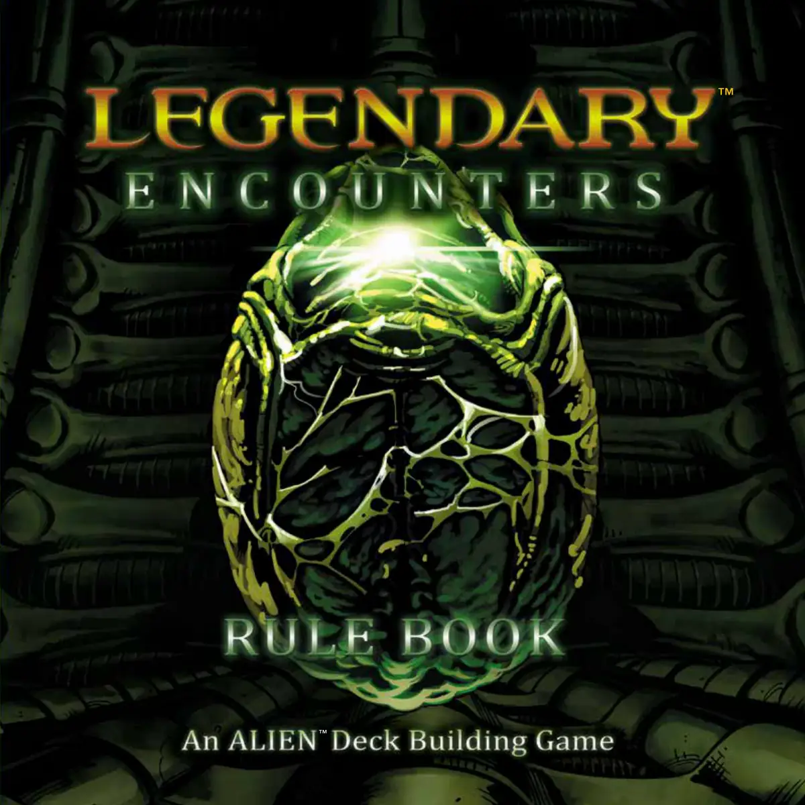
📝 第 1 页 AI 机翻对照（点击展开）
™
™
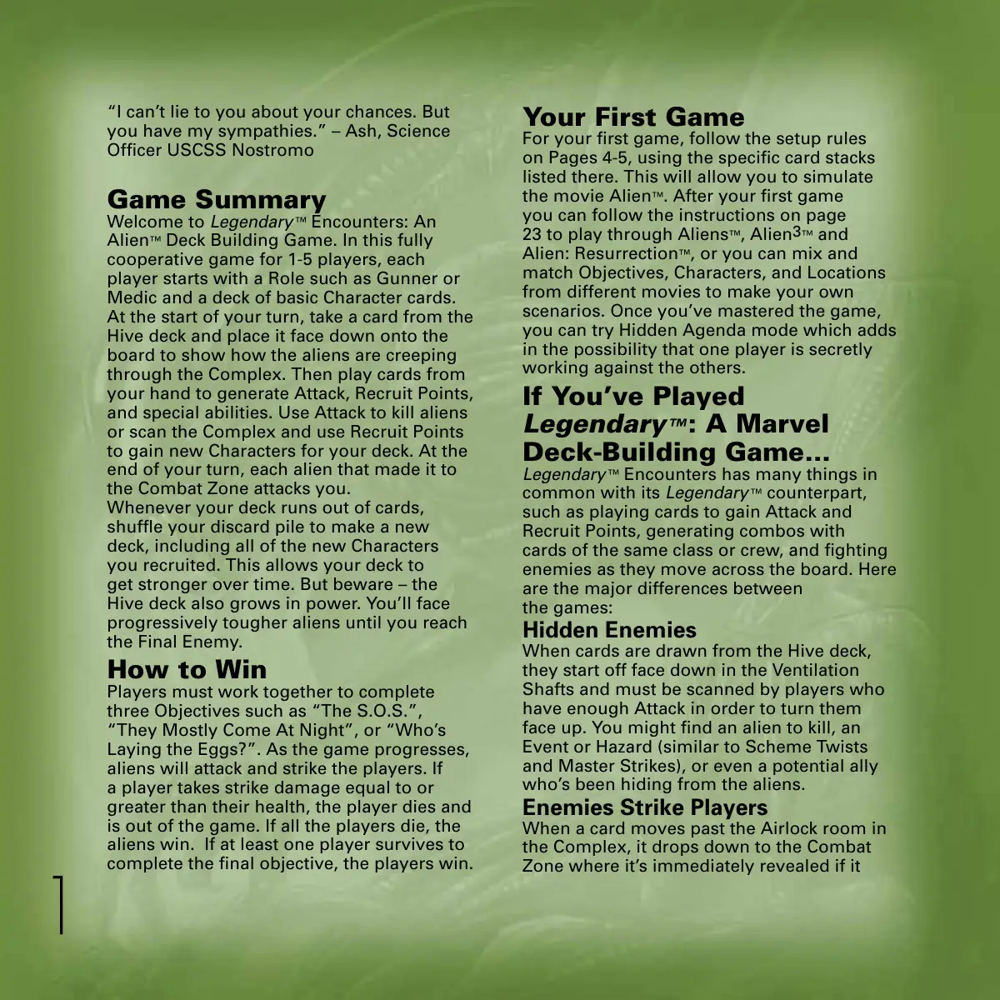
📝 第 2 页 AI 机翻对照（点击展开）
"我不能对你撒谎关于你的机会。但
我对你表示同情。" – Ash，科学官，USCSS Nostromo号
游戏概览
欢迎来到传奇™遭遇战：异形™牌库构建游戏。这是一款完全合作的游戏，适合1-5名玩家，每位玩家开始时拥有一个角色（如炮手或医疗兵）和一套基础角色卡牌。在你的回合开始时，从蜂巢牌库中抽取一张牌，并将其面朝下放在版图上，以展示异形如何在综合体中蔓延。然后从你的手牌中打出卡牌，产生攻击力、招募点和特殊能力。使用攻击力杀死异形或扫描综合体，使用招募点为你的牌库获取新角色。在你的回合结束时，到达战斗区的每只异形都会攻击你。
每当你的牌库用完牌时，将你的弃牌堆洗牌组成新牌库，包括你招募的所有新角色。这使你的牌库能够随时间变强。但要小心——蜂巢牌库的力量也在增长。你将面对越来越强的异形，直到你到达最终敌人。
如何获胜
玩家必须合作完成三个目标，例如"求救信号"、"它们主要在夜晚出现"或"谁在产卵？"。随着游戏进行，异形会攻击并打击玩家。如果玩家受到的伤害等于或大于其生命值，该玩家死亡并被淘汰出游戏。如果所有玩家都死亡，异形获胜。如果至少有一名玩家存活并完成最终目标，玩家获胜。
你的第一局游戏
对于你的第一局游戏，请遵循第4-5页的设置规则，使用其中列出的特定牌堆。这将让你能够模拟电影《异形™》。在你的第一局游戏后，你可以遵循第23页的说明来游玩《异形2™》、《异形3™》和《异形：复活™》，或者你可以混合搭配不同电影的目标、角色和地点，创造自己的场景。一旦你掌握了游戏，你可以尝试隐藏议程模式，这增加了可能有一名玩家秘密对抗其他玩家的可能性。
如果你玩过
传奇™：漫威牌库构建游戏……
传奇™遭遇战与其传奇™ counterpart有许多共同之处，例如打出卡牌获得攻击力和招募点，使用相同类别或船员的卡牌产生连击，以及当敌人穿过版图时与他们战斗。以下是游戏之间的主要区别：
隐藏敌人
当从蜂巢牌库中抽取卡牌时，它们最初面朝下放在通风管道中，必须由拥有足够攻击力的玩家扫描才能将其翻面。你可能会找到要杀死的异形、事件或危险（类似于诡计扭转和大师打击），甚至是躲藏起来的潜在盟友。
敌人攻击玩家
当一张卡牌穿过综合体的气闸室时，它会掉落到战斗区，如果它
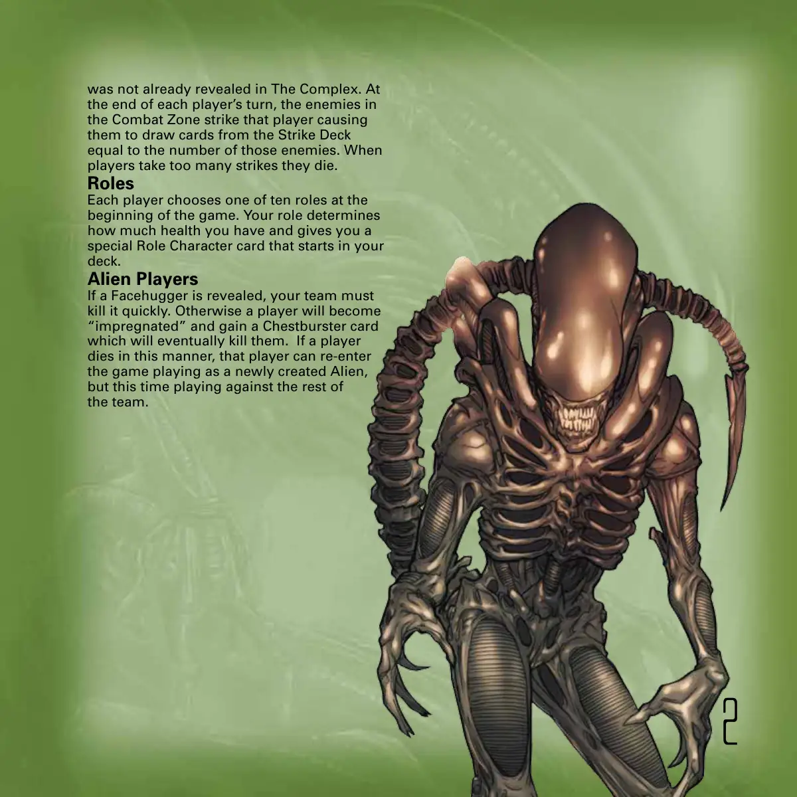
📝 第 3 页 AI 机翻对照（点击展开）
尚未在《The Complex》中揭示。在每个玩家的回合结束时，战斗区域中的敌人会攻击该玩家，导致他们从打击牌库中抽取与敌人数量相等的牌。当玩家受到过多打击时，他们会死亡。
角色
游戏开始时，每位玩家从十个角色中选择一个。你的角色决定了你拥有多少生命值，并给你一张特殊的角色卡牌，这张牌开始时就在你的牌库中。
外星玩家
如果 Facehugger 被揭示，你的团队必须迅速消灭它。否则，一位玩家将"受孕"并获得一张 Chestburster 卡牌，这张牌最终会杀死他们。如果玩家以这种方式死亡，该玩家可以作为新创建的外星玩家重新进入游戏，但这次是针对团队的其他人进行游戏。
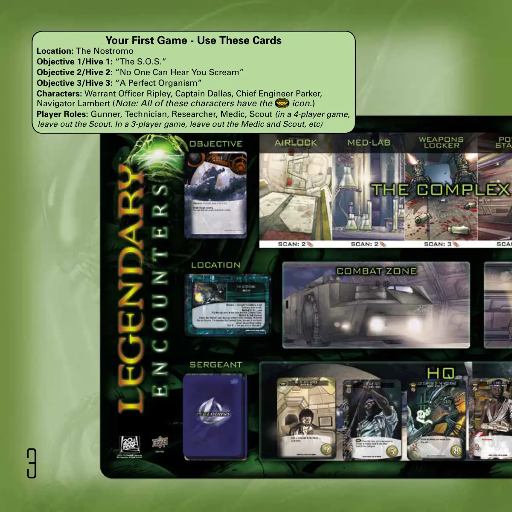
📝 第 4 页 AI 机翻对照（点击展开）
你的第一局游戏 - 使用这些卡牌
地点：诺斯托romo号 (Nostromo)
目标1/蜂巢1："求救信号" (The S.O.S.)
目标2/蜂巢2："无人能听见你的尖叫" (No One Can Hear You Scream)
目标3/蜂巢3："完美的生物" (A Perfect Organism)
角色：准尉里普利 (Warrant Officer Ripley)、船长达拉斯 (Captain Dallas)、总工程师帕克 (Chief Engineer Parker)、导航员兰伯特 (Navigator Lambert)（注意：所有这些角色都有该图标。）
玩家角色：枪手 (Gunner)、技术员 (Technician)、研究员 (Researcher)、医疗兵 (Medic)、侦察兵 (Scout)（在4人游戏中，不使用侦察兵。在3人游戏中，不使用医疗兵和侦察兵，等等）
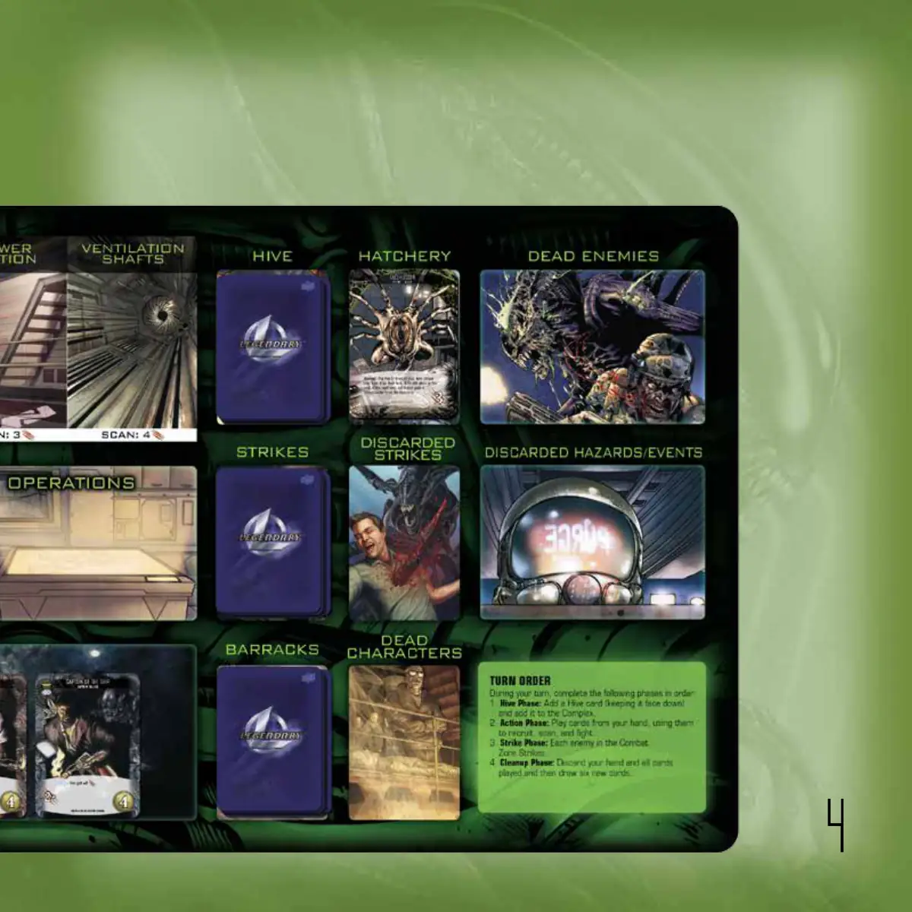
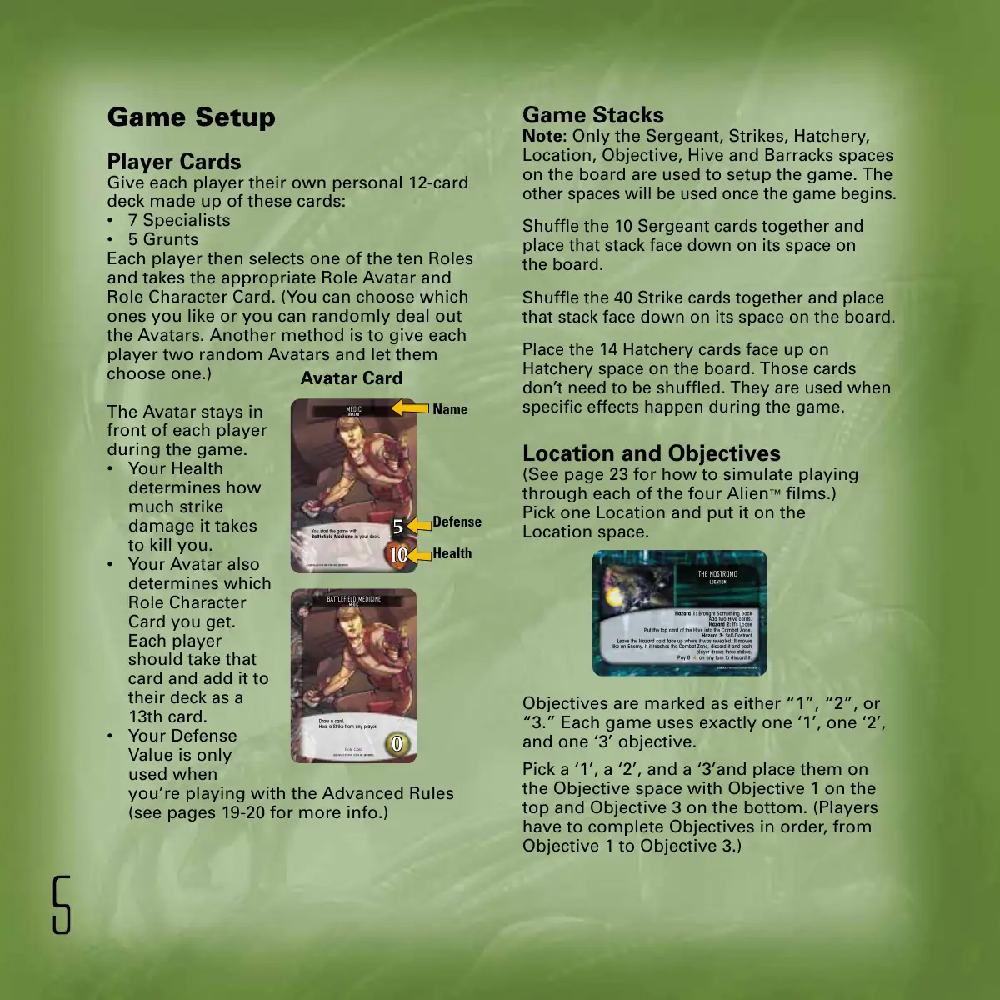
📝 第 6 页 AI 机翻对照（点击展开）
名称
化身卡
防御
生命值
ALIEN TM & © 2014 FOX. ©2014 UDC. ENCOUNTERS.
游戏开始时，你的牌库中包含
战地医疗卡。
化身
医疗兵
ALIEN TM & © 2014 FOX. ©2014 UDC. ENCOUNTERS. 0
摸一张牌。
治愈任意一名玩家的一次打击。
医疗兵
战地医疗
角色卡
地点
ALIEN TM & © 2014 FOX. ©2014 UDC. ENCOUNTERS.
诺史莫号
危险1：带回了某些东西
添加两张蜂巢卡。
危险2：它逃出来了
将蜂巢牌库顶部的牌放入战斗区。
危险3：自毁
将危险牌正面朝上留在揭示它的位置。它像敌人一样移动。如果它到达战斗区，弃掉它，并且每位玩家抽取三张打击牌。
在任何回合支付8
来弃掉它。
游戏设置
玩家卡
给每位玩家一副由以下卡牌组成的专属12张牌库：
• 7张专家卡
• 5张杂兵卡
然后每位玩家从十个角色中选择一个，并获取相应的化身角色卡和角色卡。（你可以选择喜欢的角色，或者随机分发化身。另一种方法是给每位玩家两张随机化身，让他们选择一张。）
化身在游戏期间
留在每位玩家面前。
• 你的生命值
决定了需要承受多少
打击伤害才能杀死你。
• 你的化身也决定了
你获得哪张角色卡。
每位玩家
应拿取那张卡
并将其作为第13张牌
加入他们的牌库。
• 你的防御值
仅在您使用高级规则时使用
（更多信息见第19-20页）
游戏牌堆
注意：版图上仅使用军士、打击牌、孵化室、地点、目标、蜂巢和军营格来设置游戏。其他格子在游戏开始后才会使用。
将10张军士牌洗在一起，并将这叠牌面朝下放在版图上的对应位置。
将40张打击牌洗在一起，并将这叠牌面朝下放在版图上的对应位置。
将14张孵化室牌面朝上放在版图上的孵化室格。这些牌不需要洗。它们在游戏过程中发生特定效果时使用。
地点和目标
（关于如何模拟游玩四部《异形》™电影中的每一部，请参见第23页。）
选择一个地点并将其放在地点格。
目标标记为"1"、"2"或"3"。每局游戏恰好使用一个"1"、一个"2"和一个"3"目标。
选择一个"1"、一个"2"和一个"3"，并将它们放在目标格上，目标1在顶部，目标3在底部。（玩家必须按顺序完成目标，从目标1到目标3。）
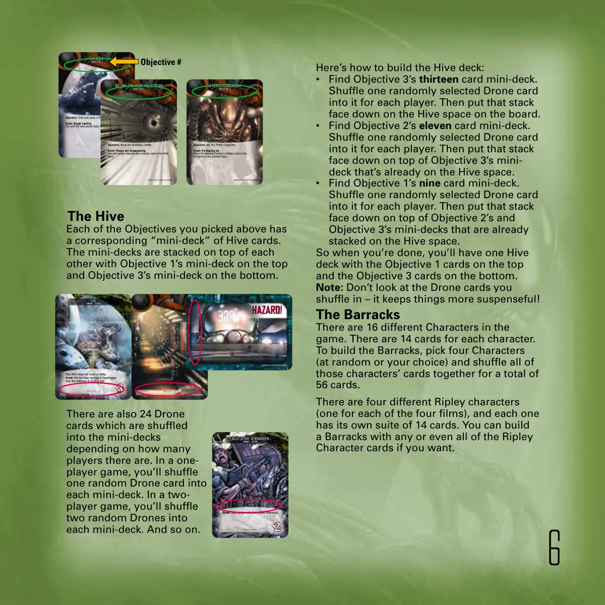
📝 第 7 页 AI 机翻对照（点击展开）
ALIEN TM & © 2014 FOX. ©2014 UDC. ENCOUNTERS.
目标：找到求救信号的两部分。
事件：粗糙着陆
你和下一位玩家各摸一张打击牌。
求救信号
目标 1
ALIEN TM & © 2014 FOX. ©2014 UDC. ENCOUNTERS.
卵
敌人 - 异形
这个异形不会移动或打击。
事件：杀死这个异形，并将一只抱面虫（Facehugger）从孵化器中放在你面前。
求救信号 - 1
ALIEN TM & © 2014 FOX. ©2014 UDC. ENCOUNTERS.
死亡：每位玩家杀死他们的一名角色。
敌人 - 异形
喷酸异形（Acid-spray Xenomorph）
工蜂牌库（Drone Deck）
ALIEN TM & © 2014 FOX. ©2014 UDC. ENCOUNTERS.
事件
求救信号 - 1
ALIEN TM & © 2014 FOX. ©2014 UDC. ENCOUNTERS.
目标：堵住通风管道。
事件：人们正在消失
下一位玩家从他们的手牌中随机弃掉两张牌。
无人能听到你的尖叫
目标 2
ALIEN TM & © 2014 FOX. ©2014 UDC. ENCOUNTERS.
目标：杀死完美生物。
事件：它在猎杀我们
将综合体中最左边的敌人或隐藏牌移动到战斗区域。
完美生物
目标 3
危险！
ALIEN TM & © 2014 FOX. ©2014 UDC. ENCOUNTERS.
求救信号 - 1
目标编号
以下是构建蜂巢牌库的方法：
• 找到目标3的十三张牌迷你牌库。为每位玩家随机洗入一张选定的工蜂牌。然后将这叠牌面朝下放在版图上的蜂巢空间上。
• 找到目标2的十一张牌迷你牌库。为每位玩家随机洗入一张选定的工蜂牌。然后将这叠牌面朝下放在已经放在蜂巢空间上的目标3的迷你牌库上。
• 找到目标1的九张牌迷你牌库。为每位玩家随机洗入一张选定的工蜂牌。然后将这叠牌面朝下放在已经堆叠在蜂巢空间上的目标2和目标3的迷你牌库上。
所以当你完成时，你会得到一个蜂巢牌库，其中目标1的牌在顶部，目标3的牌在底部。
注意：不要看你洗入的工蜂牌——这样会让事情更有悬念！
兵营
游戏中有16种不同的角色。每个角色有14张牌。
要构建兵营，选择四个角色（随机或自选），然后将所有这些角色的牌洗在一起，总共56张牌。
有四种不同的雷普利角色（对应四部电影中的每一部），每个角色都有自己的一套14张牌。如果你愿意，你可以使用任何甚至所有的雷普利角色牌来构建兵营。
蜂巢
你上面选择的每个目标都有一个对应的蜂巢牌"迷你牌库"。
这些迷你牌库相互堆叠，目标1的迷你牌库在顶部，目标3的迷你牌库在底部。
还有24张工蜂牌，根据玩家人数洗入迷你牌库。
在单人游戏中，
在玩家游戏中，你会将一张随机的无人机卡牌洗入每个迷你牌库。在双人游戏中，你会将两张随机的无人机洗入每个迷你牌库。以此类推。
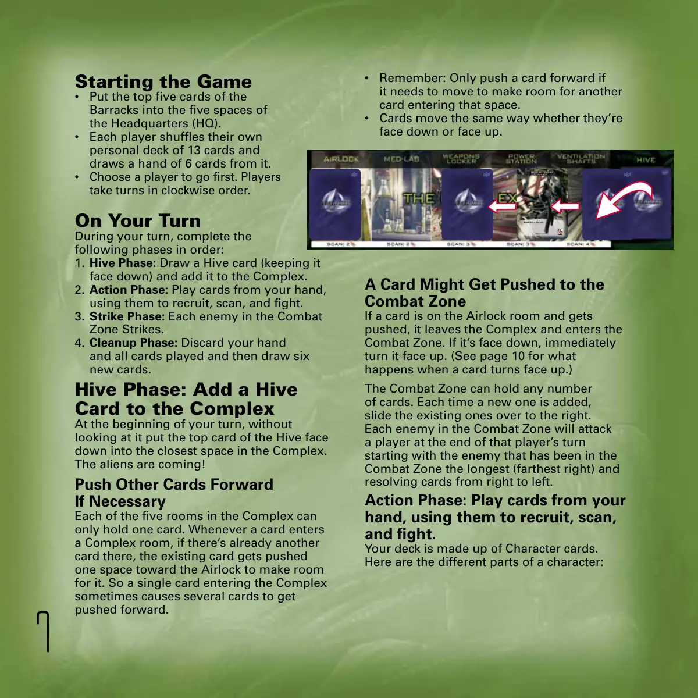
📝 第 8 页 AI 机翻对照（点击展开）
ALIEN TM & © 2014 FOX. ©2014 UDC. ENCOUNTERS.
揭示：添加一个蜂巢卡牌。
敌人 - 异形
异形群虫
失落殖民地 - 1
开始游戏
• 将牌库顶部的五张牌放入总部（HQ）的五个区域中。
• 每位玩家洗好自己的13张个人牌库，并从中抽取6张手牌。
• 选择一位玩家先手。玩家按顺时针顺序轮流行动。
在你的回合
在你的回合期间，按顺序完成以下阶段：
- 蜂巢阶段：摸一张蜂巢牌（保持面朝下）并将其加入综合体。
2. 行动阶段：从你的手牌中打出卡牌，使用它们来招募、扫描和战斗。
3. 攻击阶段：战斗区域中的每个敌人进行攻击。
4. 清理阶段：弃掉你的手牌和所有已打出的卡牌，然后摸六张新牌。
蜂巢阶段：向综合体添加一张蜂巢牌
在你的回合开始时，不要看它，将蜂巢牌库顶部的牌面朝下放入综合体中最近的区域。
外星人来了！
必要时将其他牌向前推移
综合体中的五个房间每个只能容纳一张牌。每当一张牌进入综合体房间，如果那里已经有另一张牌，现有牌会被向前推一格朝向气闸，为它腾出空间。因此，一张牌进入综合体有时会导致多张牌被向前推。
• 记住：只有当一张牌需要移动为进入该空间的其他牌腾出空间时，才将其向前推。
• 无论牌是面朝下还是面朝上，它们移动的方式都相同。
一张牌可能被推入战斗区域
如果一张牌在气闸房间并被推动，它会离开综合体并进入战斗区域。如果它是面朝下的，立即将其翻转为面朝上。（参见第10页了解牌翻面时会发生什么。）
战斗区域可以容纳任意数量的牌。每次添加新牌时，将现有牌向右滑动。战斗区域中的每个敌人在该玩家回合结束时攻击一位玩家，从已在战斗区域停留时间最长的敌人（最右边）开始，从右到左解决卡牌。
行动阶段：从你的手牌中打出卡牌，使用它们来招募、扫描和战斗。
你的牌库由角色卡牌组成。以下是角色的不同部分：
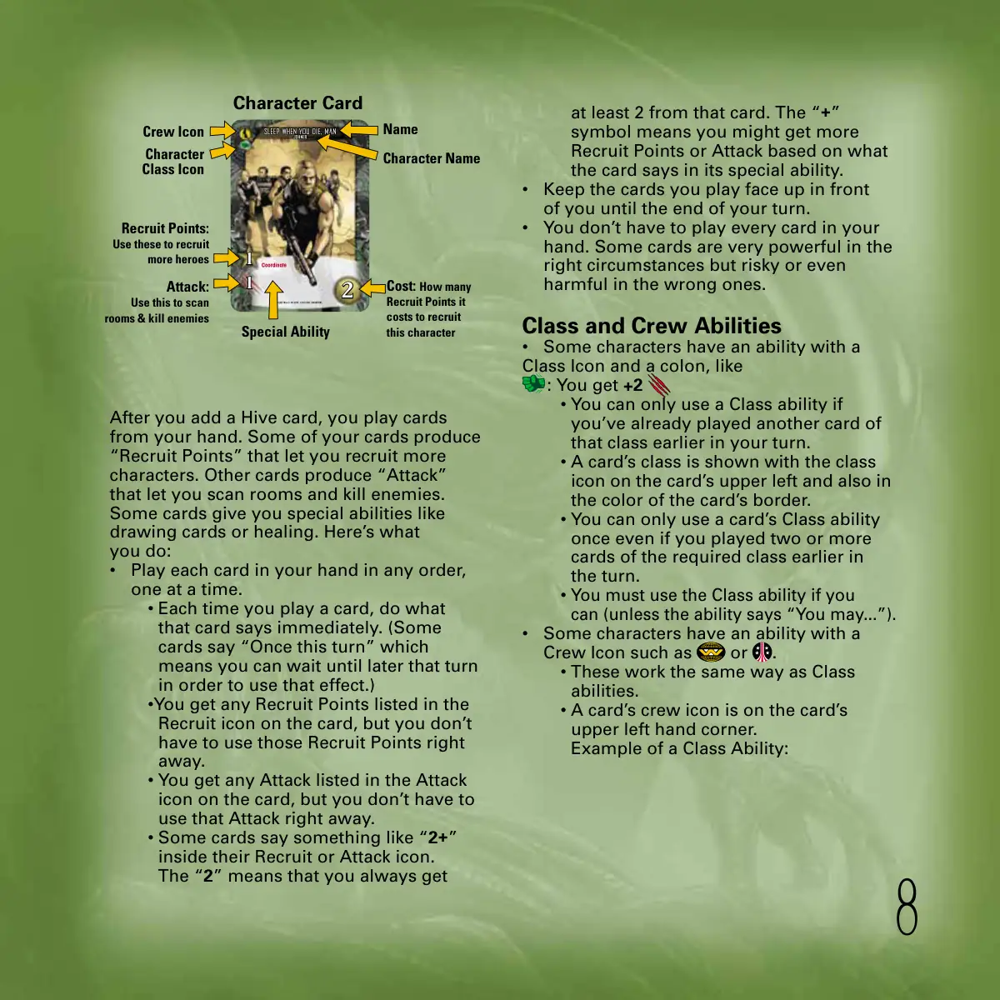
📝 第 9 页 AI 机翻对照（点击展开）
名称
角色名称
角色卡牌
船员图标
角色
职业图标
招募点：
使用这些来招募
更多英雄
攻击：
使用这个来扫描
房间并杀死敌人
特殊能力
费用：招募此角色
需要多少招募点
ALIEN TM & © 2014 FOX. ©2014 UDC. ENCOUNTERS.
Sleep When You Die, Man
JOHNER
协调至少2张来自那张卡牌的。"+"符号表示你可能会根据卡牌在其特殊能力中所说的内容获得更多的招募点或攻击值。
• 将你打出的牌面朝上放在你面前，直到你的回合结束。
• 你不必打出手中所有的牌。有些牌在适当的情况下非常强大，但在错误的情况下则可能有风险甚至有害。
职业和船员能力
• 有些角色具有带有职业图标和冒号的能力，例如：你获得+2
• 只有在你已经在该回合早些时候打出了另一张同职业的牌时，你才能使用职业能力。
• 一张牌的职业显示在卡牌左上角的职业图标中，也显示在卡牌边框的颜色中。
• 即使你在该回合早些时候打出了两张或更多所需职业的牌，你也只能使用一张牌的职业能力一次。
• 如果你能使用（除非该能力说"你可以..."），你必须使用该职业能力。
• 有些角色具有带有船员图标的能力，例如或。
• 这些的工作方式与职业能力相同。
• 一张牌的船员图标位于卡牌的左上角。
职业能力示例：
在你添加一张蜂巢卡牌后，你从手牌中打出牌。你的一些牌产生"招募点"，让你可以招募更多角色。其他牌产生"攻击"，让你可以扫描房间并杀死敌人。一些牌给你特殊能力，比如抽牌或治疗。以下是你要做的：
• 以任意顺序一次一张地打出你手中的每张牌。
• 每次你打出一张牌，立即执行该牌上所说的内容。（有些牌说"本回合一次"，这意味着你可以等到该回合晚些时候才使用该效果。）
• 你获得卡牌招募图标上列出的任何招募点，但你不必立即使用这些招募点。
• 你获得卡牌攻击图标上列出的任何攻击值，但你不必立即使用该攻击值。
• 有些牌在其招募或攻击图标内写着类似"2+"的内容。"2"表示你总是获得
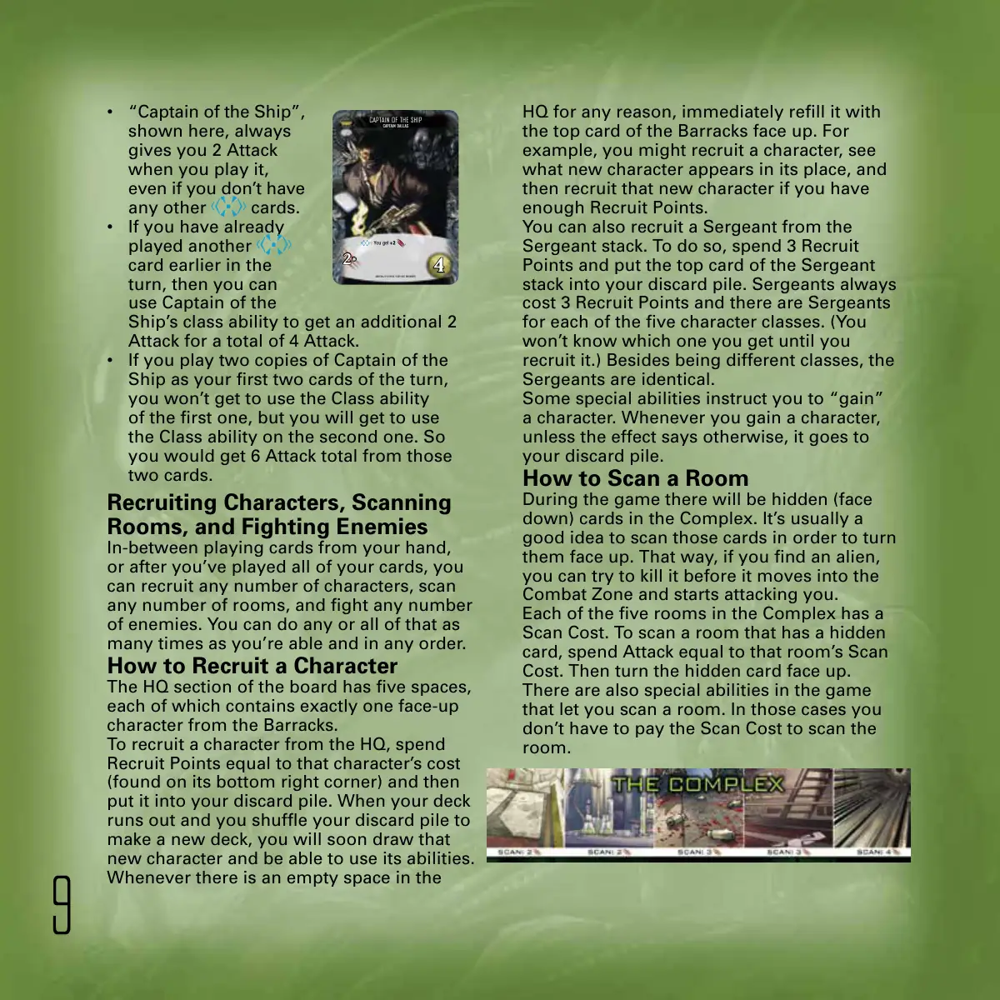
📝 第 10 页 AI 机翻对照（点击展开）
ALIEN TM & © 2014 FOX. ©2014 UDC. ENCOUNTERS.
飞船船长
Captain Dallas
2+
：你获得+2
。
• "飞船船长"，如所示，在你打出它时总是给你2点攻击力，即使你没有其他任何卡牌。
• 如果你在本回合早些时候已经打出另一张卡牌，那么你可以使用飞船船长的职业能力来额外获得2点攻击力，总共4点攻击力。
• 如果你将两张飞船船长作为你回合的前两张卡牌打出，你将无法使用第一张的职业能力，但你可以使用第二张的职业能力。因此，你将从这两张卡牌总共获得6点攻击力。
招募角色、扫描房间和战斗敌人
在你从手牌中打出卡牌之间，或者在你打完所有卡牌之后，你可以招募任意数量的角色、扫描任意数量的房间，并与任意数量的敌人战斗。你可以根据能力和任何顺序尽可能多次地执行其中任何一项或全部操作。
如何招募角色
版图的总部区域有五个空间，每个空间包含来自兵营的一张正面朝上的角色。
要从总部招募角色，花费等于该角色费用的招募点数（在其右下角找到），然后将其放入你的弃牌堆。当你的牌库用完并洗弃牌堆来制作新牌库时，你很快就会抽到这个新角色并能够使用其能力。
无论出于何种原因，只要总部出现空位，立即用兵营顶部的牌正面朝上补充。例如，你可能招募一个角色，看到什么新角色出现在其位置，然后如果你有足够的招募点数，就招募那个新角色。
你也可以从军士堆中招募一名军士。为此，花费3点招募点数，并将军士堆顶部的牌放入你的弃牌堆。军士总是花费3点招募点数，并且每个五个职业类别都有对应的军士。（直到你招募它时，你才会知道你得到的是哪一个。）除了职业不同外，军士是完全相同的。
一些特殊能力指示你"获得"一个角色。每当获得一个角色时，除非效果另有说明，否则它进入你的弃牌堆。
如何扫描房间
游戏过程中，复杂区域会有隐藏的（背面朝上）卡牌。通常最好扫描这些卡牌，将它们正面朝上。这样，如果你发现一个外星人，你可以在它进入战斗区域并开始攻击你之前尝试消灭它。
复杂区域的五个房间中的每一个都有一个扫描费用。要扫描有隐藏卡牌的房间，花费等于该房间扫描费用的攻击力。然后将隐藏卡牌正面朝上。
游戏中还有特殊能力
让你扫描房间。在这些情况下，你无需支付扫描费用来扫描房间。
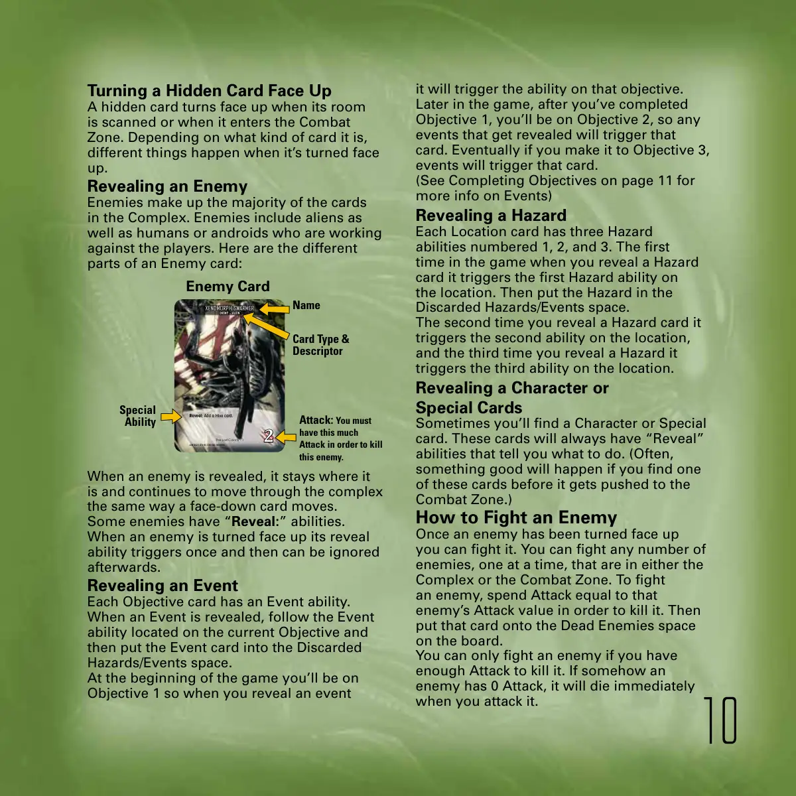
📝 第 11 页 AI 机翻对照（点击展开）
名称
卡牌类型 &
描述符
敌方卡牌
特殊
能力
攻击：你必须拥有
至少这么多攻击力才能
消灭这个敌人。
ALIEN TM & © 2014 FOX. ©2014 UDC. ENCOUNTERS.
揭示：添加一张蜂巢卡牌。
敌人 - 异形
异形群虫
失落殖民地 - 1
它将触发该目标上的能力。
游戏后期，在你完成目标1后，你将进入目标2，因此任何被揭示的事件都将触发那张卡牌。最终，如果你到达目标3，事件将触发那张卡牌。
（有关事件的更多信息，请参见第11页的完成目标）
揭示危险
每个地点卡牌都有三个编号为1、2和3的危险能力。游戏中第一次揭示危险卡牌时，会触发该地点的第一个危险能力。然后将该危险卡牌放入已弃置的危险/事件区域。
第二次揭示危险卡牌时，会触发该地点的第二个能力，第三次揭示危险卡牌时，会触发该地点的第三个能力。
揭示角色或特殊卡牌
有时你会找到角色或特殊卡牌。这些卡牌总是会有"揭示"能力，告诉你该做什么。（通常，如果在这些卡牌被推入战斗区之前找到它们，会有好事发生。）
如何战斗敌人
一旦敌人被翻转为正面朝上，你就可以战斗它。你可以战斗任意数量的敌人，一次一个，这些敌人可以在复杂区域或战斗区中。要战斗一个敌人，花费等于该敌人攻击值的攻击力来消灭它。然后将该卡牌放到版图上的死亡敌人区域。
只有当你有足够的攻击力消灭敌人时，你才能战斗它。如果某个敌人有0点攻击力，当你攻击它时它会立即死亡。
将隐藏卡牌翻转为正面朝上
当房间被扫描或卡牌进入战斗区时，隐藏卡牌会翻转为正面朝上。根据卡牌类型的不同，翻转为正面朝上时会发生不同的事情。
揭示敌人
敌人构成了复杂区域中卡牌的主体。敌人包括外星人以及与玩家为敌的人类或仿生人。以下是敌方卡牌的不同部分：
当敌人被揭示时，它停留在原位，并以与正面朝下卡牌相同的方式继续在复杂区域中移动。一些敌人有"揭示："能力。当敌人被翻转为正面朝上时，其揭示能力会触发一次，之后可以被忽略。
揭示事件
每个目标卡牌都有一个事件能力。当事件被揭示时，遵循当前目标上的事件能力，然后将事件卡牌放入已弃置的危险/事件区域。
游戏开始时你将在目标1上，因此当你揭示一个事件时
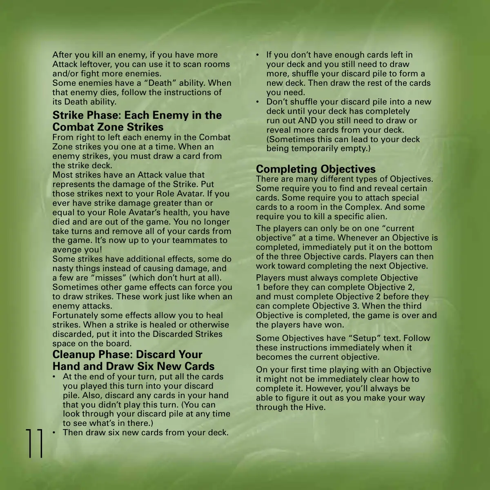
📝 第 12 页 AI 机翻对照（点击展开）
当你击败一个敌人后，如果你有剩余的攻击力，你可以用它来扫描房间和/或与更多敌人战斗。
有些敌人拥有"死亡"能力。当该敌人死亡时，遵循其死亡能力的说明。
打击阶段：战斗区域中的每个敌人进行打击
从右到左，战斗区域中的每个敌人依次对你进行一次打击。当敌人进行打击时，你必须从打击牌库中抽取一张牌。
大多数打击都有一个攻击值，代表该打击的伤害。将这些打击放在你的角色头像旁边。如果你累计的打击伤害大于或等于你的角色头像的生命值，你就已经死亡并被淘汰出游戏。你不再进行回合，并将你所有的牌从游戏中移除。现在轮到你的队友为你复仇！
有些打击有额外效果，有些会造成恶劣效果而非伤害，还有一些是"未命中"（完全不会造成伤害）。
有时，其他游戏效果会迫使你抽取打击牌。这些效果与敌人攻击时的工作方式相同。
幸运的是，一些效果允许你治疗打击牌。当一张打击牌被治疗或以其他方式被弃置时，将其放入版图上的已弃置打击区域。
整理阶段：弃置你的手牌并抽六张新牌
• 在你的回合结束时，将你本回合打出的所有牌放入你的弃牌堆。同时，弃置你本回合未打出的手牌中的任何牌。（你可以随时查看你的弃牌堆，看看里面有什么。）
• 然后从你的牌库中抽六张新牌。
• 如果你的牌库中剩余的牌不足以满足你的抽牌需求，将你的弃牌堆洗牌形成新牌库。然后抽到你需要的剩余牌。
• 在你的牌库完全用完之前，不要将弃牌堆洗牌形成新牌库，除非你仍然需要从牌库中抽牌或揭示更多牌。（有时这可能导致你的牌库暂时为空。）
完成目标
有许多不同类型的目标。有些要求你找到并揭示特定的牌。有些要求你将特殊牌附加到综合设施的一个房间中。还有些要求你杀死特定的外星人。
玩家一次只能有一个"当前目标"。每当一个目标被完成，立即将其放在三张目标牌的底部。然后玩家可以开始努力完成下一个目标。
玩家必须先完成目标1，才能完成目标2，并且必须先完成目标2，才能完成目标3。当第三个目标完成时，游戏结束，玩家获胜。
有些目标有"设置"文本。当它成为当前目标时，立即遵循这些说明。
在第一次使用某个目标时，可能不会立即清楚如何
完成它。然而，当你穿越蜂巢时，你总能弄明白。
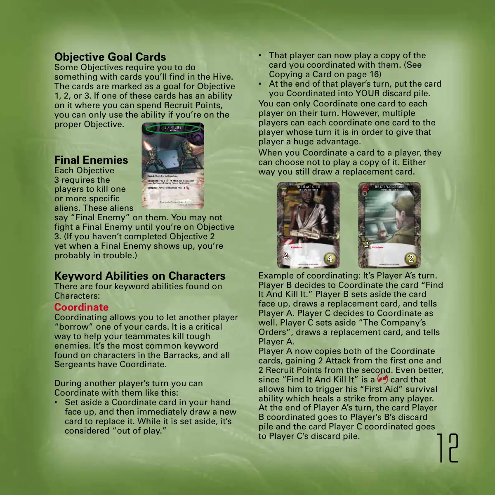
📝 第 13 页 AI 机翻对照（点击展开）
ALIEN TM & © 2014 FOX. ©2014 UDC. ENCOUNTERS.
首席工程师帕克
找到它并消灭它
协调
ALIEN TM & © 2014 FOX. ©2014 UDC. ENCOUNTERS. 2
协调
弗朗西斯"85"亚伦
公司的命令
ALIEN TM & © 2014 FOX. ©2014 UDC. ENCOUNTERS.
揭示：将此移至行动点。
行动点：支付2
将此附加到任何没有哨枪的空房间。
复杂：此房间中的敌人有-2点能力。
任务
哨枪
它们大多在夜间出现 - 2
• 那个玩家现在可以打出一张你与他们协调的卡牌副本。（参见第16页的复制卡牌）
• 在那个玩家回合结束时，将你协调的卡牌放入你的弃牌堆。
你只能在每个玩家的回合向他们协调一张卡牌。然而，多个玩家可以在当前玩家回合期间各自向该玩家协调一张卡牌，以给该玩家巨大优势。
当你向玩家协调一张卡牌时，他们可以选择不打出该卡牌的副本。无论哪种情况，你仍然会摸一张替换卡牌。
协调示例：这是玩家A的回合。玩家B决定协调"找到它并消灭它"这张卡牌。玩家B将卡牌正面朝上放在一旁，摸一张替换卡牌，并告诉玩家A。玩家C也决定协调。玩家C将"公司的命令"放在一旁，摸一张替换卡牌，并告诉玩家A。
玩家A现在复制了两张协调卡牌，从第一张获得2点攻击力，从第二张获得2点招募点。更好的是，由于"找到它并消灭它"是一张允许他触发他的"急救"生存能力的卡牌，该能力可以治愈来自任何玩家的一次打击。
在玩家A的回合结束时，玩家B协调的卡牌进入玩家B的弃牌堆，玩家C协调的卡牌进入玩家C的弃牌堆。
目标目标卡牌
一些目标要求你对在蜂巢中找到的卡牌做某些事情。这些卡牌标记为目标1、2或3的目标。如果这些卡牌中有能力允许你花费招募点，你只有在处于正确的目标时才能使用该能力。
最终敌人
每个目标3要求玩家杀死一个或多个特定的异形。这些异形上标有"最终敌人"。你必须处于目标3才能与最终敌人战斗。（如果最终敌人出现时你尚未完成目标2，你可能麻烦大了。）
角色上的关键词能力
角色上有四种关键词能力：
协调
协调允许你让其他玩家"借用"你的一张卡牌。这是帮助队友消灭强大敌人的关键方式。这是军营中最常见的关键词，所有军士都有协调能力。
在另一个玩家的回合期间，你可以像这样与他们协调：
• 在你的手牌中放置一张协调卡牌
正面朝上，然后立即摸一张新牌来替换它。当它被放置在一旁时，它被视为"不在游戏中"。
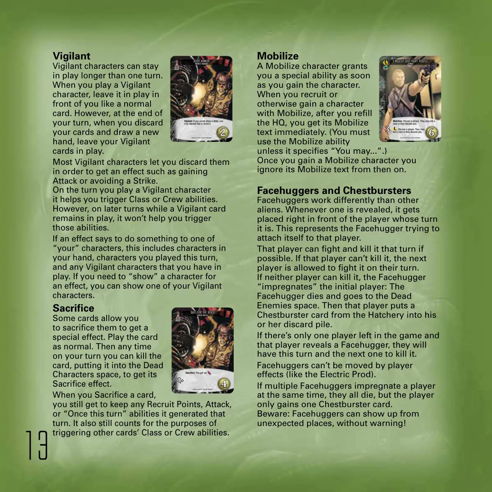
📝 第 14 页 AI 机翻对照（点击展开）
ALIEN TM & © 2014 FOX. ©2014 UDC. ENCOUNTERS.
警戒：如果你将要受到一次打击，你可以弃掉此牌来避免它。
private hudson
护甲
ALIEN TM & © 2014 FOX. ©2014 UDC. ENCOUNTERS.
2+
献祭：你获得+2点。
SiSter ripley
为野兽设饵
ALIEN TM & © 2014 FOX. ©2014 UDC. ENCOUNTERS. 6
动员：选择一名玩家。他们可以弃掉其弃牌堆中的一张牌。
：选择一名玩家。他们可以弃掉其弃牌堆中的一张牌。
JOHNER
我主要是伤害人
警戒
警戒角色可以留在场上超过一个回合。
当你打出一张警戒角色时，像普通牌一样将其留在你面前的场上。然而，在你的回合结束时，当你弃掉你的牌并摸一张新手牌时，将你的警戒牌留在场上。
大多数警戒角色允许你弃掉它们来获得效果，例如获得攻击力或避免一次打击。
在你打出警戒角色的那个回合，它可以帮助你触发职业或船员能力。然而，在警戒牌留在场面的后续回合中，它不会帮助你触发那些能力。
如果一个效果要求对"你的"一张角色做某事，这包括你手牌中的角色、你本回合打出的角色，以及你在场上拥有的任何警戒角色。如果你需要"展示"一张角色来触发效果，你可以展示你的其中一张警戒角色。
献祭
一些牌允许你献祭它们来获得特殊效果。像平常一样打出牌。然后在你回合的任何时候，你可以杀死这张牌，将其放入死亡角色区域，来获得其献祭效果。
当你献祭一张牌时，你仍然可以保留它在该回合产生的任何招募点、攻击力或"本回合一次"能力。它仍然计入触发其他牌的职业或船员能力的目的中。
动员
动员角色在你获得该角色时立即赋予你一个特殊能力。
当你招募或以其他方式获得一张带有动员的角色后，在你补充总部后，你立即获得其动员文本。（除非指定"你可以..."，否则你必须使用动员能力。）
一旦你获得一张动员角色，你从那时起忽略其动员文本。
抱面虫和胸骨破
抱面虫与其他异形的工作方式不同。每当一张抱面虫被揭示，它会被直接放在当前回合玩家的面前。这代表抱面虫试图附着在该玩家身上。
如果可能，该玩家可以在该回合战斗并杀死它。如果该玩家无法杀死它，则下一名玩家被允许在自己的回合战斗。
如果两名玩家都无法杀死它，抱面虫"使"初始玩家受孕：抱面虫死亡并进入死亡敌人区域。然后该玩家从孵化场中取出一张胸骨破牌放入其弃牌堆。
如果游戏中只剩一名玩家，且该玩家展示了一个抱脸虫，他们将拥有这个回合和下一个回合来消灭它。
抱面虫不能被玩家效果移动（如电击器）。
如果多个抱面虫同时感染一名玩家，它们都会死亡，但玩家只获得一个胸骨破出者卡牌。
当心：抱面虫可能从意想不到的地方突然出现，毫无预警！
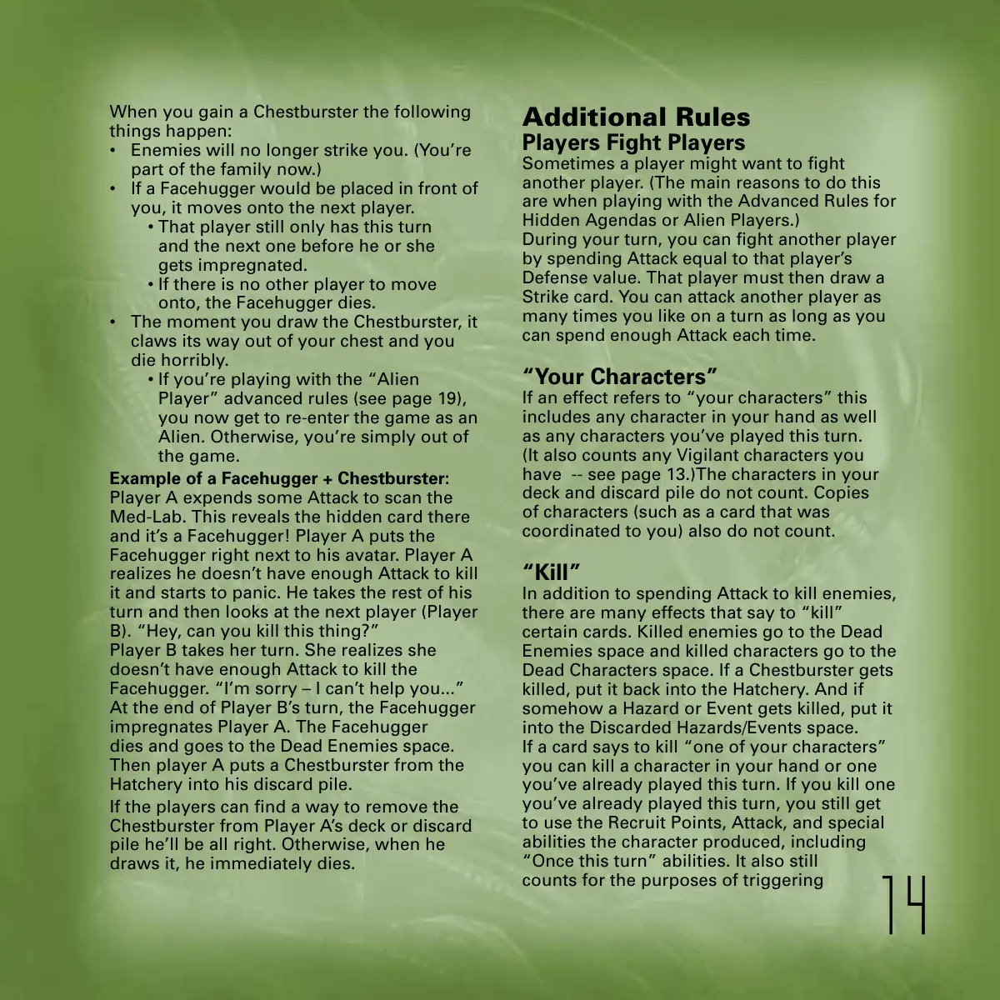
📝 第 15 页 AI 机翻对照（点击展开）
额外规则
玩家对战玩家
有时玩家可能想要与其他玩家对战。（这样做的主要原因是当使用隐藏议程或外星玩家的高级规则时。）
在你的回合中，你可以通过消耗等同于该玩家防御值的攻击力来攻击另一名玩家。然后该玩家必须抽取一张打击卡牌。只要每次你都能消耗足够的攻击力，你可以在一个回合内攻击其他玩家任意次数。
"你的角色"
如果一个效果指的是"你的角色"，这包括你手牌中的任何角色以及你本回合已经打出的任何角色。（这也包括你拥有的警戒角色——参见第13页。）你牌库和弃牌堆中的角色不计入。角色的复制牌（例如协调给你的卡牌）也不计入。
"击杀"
除了通过消耗攻击力来击杀敌人外，还有许多效果会指示"击杀"特定卡牌。被击杀的敌人进入死亡敌人区域，被击杀的角色进入死亡角色区域。如果抱脸虫被击杀，将其放回育幼室。如果危险牌或事件牌被击杀，将其放入已弃置的危险/事件牌区域。
如果一张卡牌指示要击杀"你的一个角色"，你可以击杀你手牌中的一个角色或你本回合已经打出的一个角色。如果你击杀了一个本回合已经打出的角色，你仍然可以使用该角色产生的招募点、攻击力和特殊能力，包括"本回合一次"能力。它仍然计入触发目的。
当你获得抱脸虫时，会发生以下事情：
• 敌人将不再攻击你。（你现在是一家人了。）
• 如果抱脸虫要被放置在你面前，它会移动到下一位玩家那里。
• 那位玩家仍然只有这个回合和下一个回合才会被寄生。
• 如果没有其他玩家可以移动到，抱脸虫死亡。
• 你抽取抱脸虫的那一刻，它会从你的胸口爬出来，你悲惨地死亡。
• 如果你正在使用"外星玩家"高级规则（参见第19页），你现在可以重新以外星身份进入游戏。否则，你 simply out of the game.
抱脸虫+抱脸虫的示例：
玩家A消耗一些攻击力扫描医疗实验室。这揭示了那里的隐藏卡牌，是一张抱脸虫！玩家A将抱脸虫放在他的头像旁边。玩家A意识到他没有足够的攻击力来击杀它，开始恐慌。他完成了自己回合的剩余部分，然后看着下一位玩家（玩家B）。"嘿，你能干掉这个东西吗？"
玩家B进行她的回合。她意识到她没有足够的攻击力来击杀抱脸虫。"对不起——我帮不了你......"
在玩家B回合结束时，抱脸虫寄生了玩家A。抱脸虫
死亡并前往"死亡敌人"区域。
然后玩家A将"育幼房"中的一只"破胸者"放入其弃牌堆。
如果玩家们能找到办法从玩家A的牌库或弃牌堆中移除这只"破胸者"，他就会没事。否则，当他摸到它时，他会立即死亡。
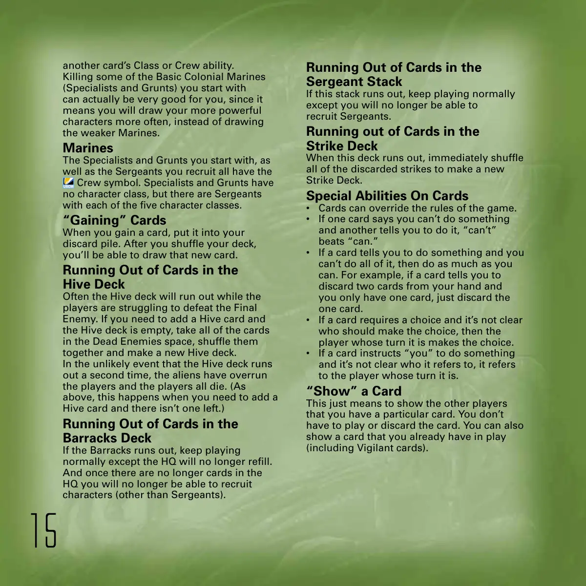
📝 第 16 页 AI 机翻对照（点击展开）
另一张卡牌的阶级或船员能力。
杀死你开始时的一些基础海军陆战队员
（专家和步兵）实际上对你非常有利，
因为这意味着你会更频繁地抽到更强大的角色，
而不是抽到较弱的海军陆战队员。
海军陆战队员
你开始时的专家和步兵，以及你招募的所有军士，
都有船员标志。专家和步兵没有角色阶级，
但有五种角色阶级的军士。
"获得"卡牌
当你获得一张卡牌时，将其放入你的弃牌堆。
在你洗牌后，你就可以抽到那张新卡牌。
异形牌库用完
当玩家们努力击败最终敌人时，异形牌库经常会用完。
如果你需要添加一张异形牌而异形牌库已空，
取走"死亡敌人"区域的所有牌，将它们洗在一起，
制作一个新的异形牌库。
在异形牌库第二次用完的极不可能情况下，
异形已经压倒了玩家，所有玩家都死亡。（如上所述，
这种情况发生在你需要添加一张异形牌但没有剩余牌时。）
军营牌库用完
如果军营牌库用完，继续正常游戏，但总部不再补充。
一旦总部没有牌了，你将无法再招募角色（军士除外）。
军士堆用完
如果这个堆用完，继续正常游戏，但你将无法再招募军士。
突袭牌库用完
当这个牌库用完时，立即将所有已弃置的突袭牌洗在一起，
制作一个新的突袭牌库。
卡牌上的特殊能力
• 卡牌可以覆盖游戏规则。
• 如果一张卡牌说你不能做某事，而另一张卡牌指示你去做，
"不能"优先于"可以"。
• 如果一张卡牌指示你做某事，但你无法全部完成，
那么就尽可能多地完成。例如，如果一张卡牌指示你从手牌中弃置两张牌，
而你只有一张牌，就只弃置那张牌。
• 如果一张卡牌需要选择，且不清楚应由谁做出选择，
则由当前回合的玩家做出选择。
• 如果一张卡牌指示"你"做某事，且不清楚它指的是谁，
则指的是当前回合的玩家。
"展示"一张卡牌
这只是向其他玩家展示你拥有某张特定的卡牌。
你不必打出或弃置这张卡牌。你也可以展示你已经打出的卡牌
（包括警戒卡牌）。
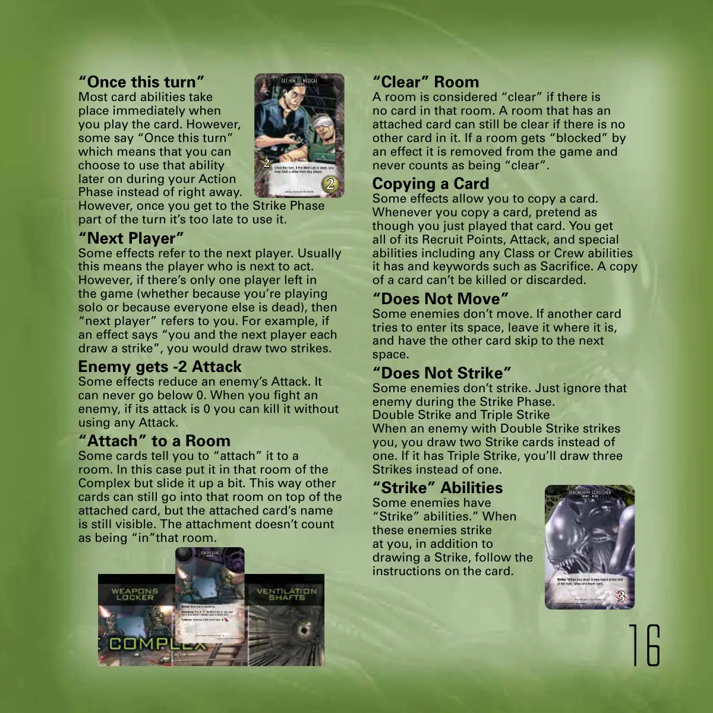
📝 第 17 页 AI 机翻对照（点击展开）
ALIEN TM & © 2014 FOX. ©2014 UDC. ENCOUNTERS. 2
本回合一次，如果医疗实验室是空的，你可以治疗任何玩家的一次打击。
主教
把他送到医疗
ALIEN TM & © 2014 FOX. ©2014 UDC. ENCOUNTERS.
揭示：将此移至操作区。
操作区：支付2
将此附着到任何没有哨枪的空房间。
复杂区：此房间内的敌人攻击-2。
任务
哨枪
它们主要在夜间出现 - 2
ALIEN TM & © 2014 FOX. ©2014 UDC. ENCOUNTERS.
打击：当你在本回合结束时摸新的一手牌时，少摸一张牌。
异形尖叫者
敌人 - 异形
野兽就在外面 - 2
"空"房间
如果某个房间内没有卡牌，则该房间被视为"空"。如果一个房间有附着的卡牌，但其中没有其他卡牌，它仍然可以是空的。如果一个房间被效果"阻塞"，它将被移出游戏，且从不被视为"空"。
复制卡牌
某些效果允许你复制一张卡牌。每当复制卡牌时，就假装你刚刚打出那张卡。你获得其所有的招募点、攻击力和特殊能力，包括任何职业或船员能力以及诸如牺牲等关键词。卡牌的复制版不能被消灭或弃置。
"不移动"
有些敌人不移动。如果另一张卡牌试图进入其所在区域，就让它留在原处，并让另一张卡牌跳到下一个区域。
"不打击"
有些敌人不打击。只需在打击阶段忽略该敌人。
双重打击和三重打击
当一个具有双重打击的敌人打击你时，你会摸两张打击牌而不是一张。如果它有三重打击，你会摸三张打击牌而不是一张。
"打击"能力
有些敌人具有"打击"能力。当这些敌人打击你时，除了摸一张打击牌外，还要遵循卡牌上的说明。
"本回合一次"
大多数卡牌能力在你打出卡牌时立即生效。然而，有些写着"本回合一次"，这意味着你可以在你的行动阶段稍后选择使用该能力，而不是立即使用。但是，一旦你到达回合的打击阶段部分，就太晚了无法使用它。
"下一位玩家"
某些效果指的是下一位玩家。这通常意味着接下来要行动的玩家。然而，如果游戏中只剩一位玩家（无论是因为你在玩单人模式还是因为其他所有人都死了），那么"下一位玩家"指的是你。例如，如果一个效果说"你和下一位玩家各摸一张打击牌"，你会摸两张打击牌。
敌人攻击-2
某些效果会减少敌人的攻击力。它永远不会低于0。当你与敌人战斗时，如果其攻击力为0，你可以在不使用任何攻击力的情况下消灭它。
"附着"到房间
某些卡牌告诉你"附着"到房间。在这种情况下，将其放入复杂区的该房间中，但稍微向上滑动一点。这样其他
卡牌仍然可以放在该房间中已附着卡牌的上方，但已附着卡牌的名称仍然可见。该附着物不计为"在"该房间内。
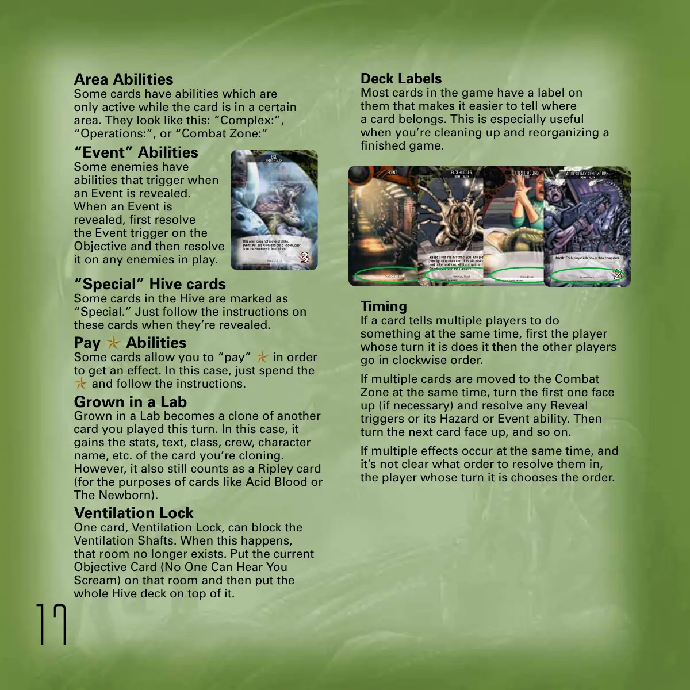
📝 第 18 页 AI 机翻对照（点击展开）
ALIEN TM & © 2014 FOX. ©2014 UDC. ENCOUNTERS.
卵
敌人 - 异形
这个异形不会移动或攻击。
事件：消灭这个异形，并将一只抱脸虫（Facehugger）从孵化器（Hatchery）中放在你面前。
求救信号 - 1
ALIEN TM & © 2014 FOX. ©2014 UDC. ENCOUNTERS.
事件
求救信号 - 1
ALIEN TM & © 2014 FOX. ©2014 UDC. ENCOUNTERS.
揭示：将此卡放在你面前。任何玩家可以在他们的回合中与它战斗。如果它在下一个回合结束时仍然存活，消灭它并从孵化器中获得一只胸骨破出者（Chestburster）。
敌人 - 异形
抱脸虫
孵化器牌库
ALIEN TM & © 2014 FOX. ©2014 UDC. ENCOUNTERS.
轻伤
攻击
攻击牌库
ALIEN TM & © 2014 FOX. ©2014 UDC. ENCOUNTERS.
死亡：每个玩家消灭他们的一名角色。
敌人 - 异形
喷酸异形
工蜂牌库
区域能力
有些卡牌只有在位于特定区域时才具有能力。它们看起来像这样："复杂区："、"操作区："或"战斗区："
"事件"能力
有些敌人在事件被揭示时会触发能力。
当事件被揭示时，先解决目标卡上的事件触发，然后解决场上任何敌人上的事件触发。
"特殊"蜂巢卡牌
蜂巢中的一些卡被标记为"特殊"。当这些卡被揭示时，只需遵循这些卡上的说明。
支付能力
有些卡牌允许你"支付"以获得效果。在这种情况下，只需花费并遵循说明。
实验室培育
实验室培育（Grown in a Lab）成为你本回合打出的另一张卡牌的克隆体。在这种情况下，它获得了你所克隆卡牌的数值、文本、类别、船员、角色名称等。然而，它仍然被算作是雷普利卡牌（就酸血或新生儿等卡牌而言）。
通风锁
一张卡牌，通风锁（Ventilation Lock），可以封锁通风管道。当这种情况发生时，那个房间不再存在。将当前目标卡（无人能听见你的尖叫）（No One Can Hear You Scream）放在那个房间上，然后将整个蜂巢牌库放在它上面。
牌库标签
游戏中的大多数卡牌上都有一个标签，使更容易判断一张卡属于哪里。这在清理和组织一局已结束的游戏时特别有用。
时机
如果一张卡牌告诉多个玩家同时做某事，首先轮到回合的玩家执行，然后其他玩家按顺时针顺序执行。
如果多张卡牌同时被移至战斗区，首先将第一张卡牌面朝上（如果需要），并解决任何揭示触发器或其危险或事件能力。然后将下一张卡牌面朝上，依此类推。
如果多个效果同时发生，且不清楚应该按什么顺序解决它们，则轮到回合的玩家选择顺序。
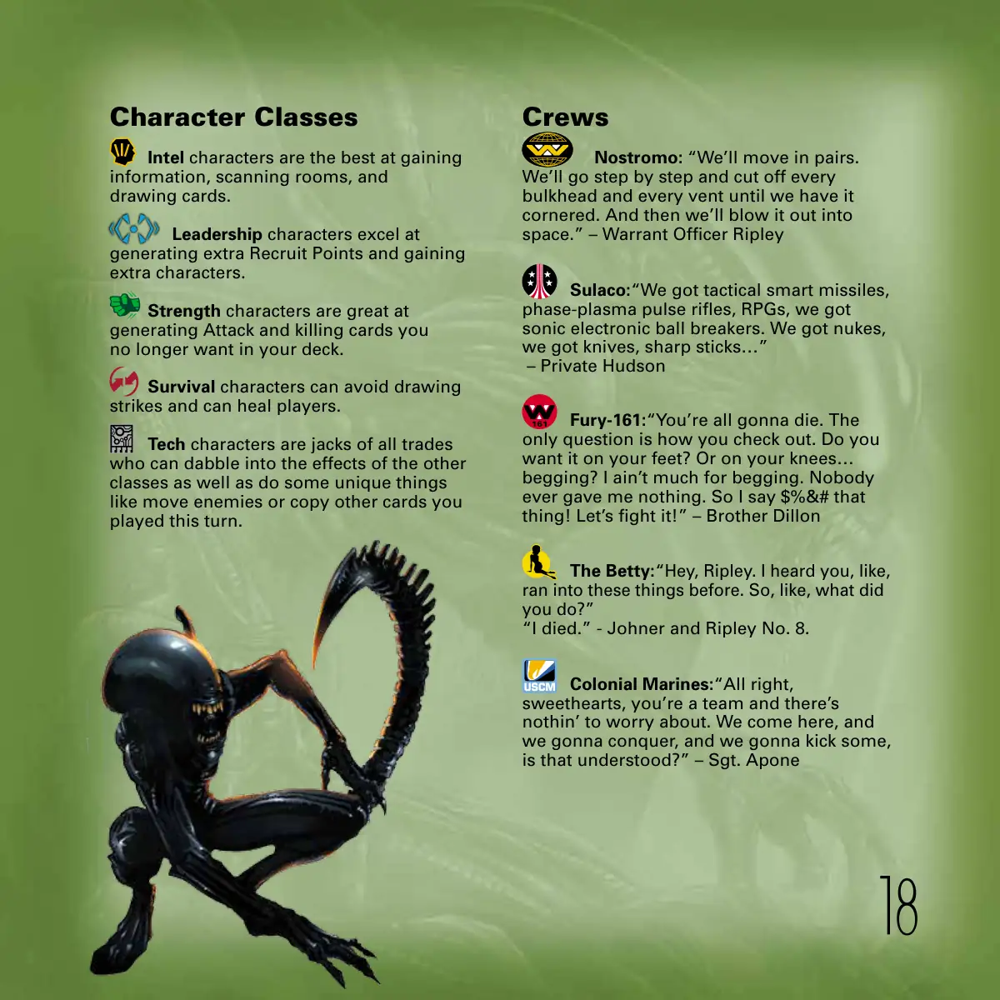
📝 第 19 页 AI 机翻对照（点击展开）
船员
诺斯托romo号："我们将两人一组行动。
我们会一步一步地前进，封锁每一个舱壁和通风口，
直到把它逼入绝境。然后我们把它炸到太空去。"——准尉雷普利
苏拉科号："我们有战术智能导弹、相脉冲等离子步枪、RPG火箭筒，
我们还有声波电子球粉碎器。我们有核武器，我们有刀子，锋利的棍子……"
——二等兵哈德森
Fury-161："你们都会死。唯一的问题是你们如何死去。你们想站着死？
还是跪着……乞求？我不太喜欢乞求。从来没人给过我任何东西。
所以我说去他的那个东西！让我们战斗吧！"——兄弟迪伦
贝蒂号："嘿，雷普利。我听说你，呃，以前遇到过这些东西。
那么，呃，你做了什么？"
"我死了。"——乔纳和8号雷普利
殖民海军陆战队："好了，甜心们，你们是一个团队，没什么好担心的。
我们来到这里，我们要征服，我们要狠狠打击，明白了吗？"——阿波恩中士
角色职业
智力角色最擅长获取信息、扫描房间和抽牌。
领导力角色擅长额外获得招募点和额外角色。
力量角色擅长产生攻击力并消灭你不再想要的手牌中的卡牌。
生存角色可以避免受到打击并可以治疗玩家。
技术角色是全能型选手，他们可以涉足其他职业的效果，
也能做一些独特的事情，比如移动敌人或复制你本回合打出的其他卡牌。
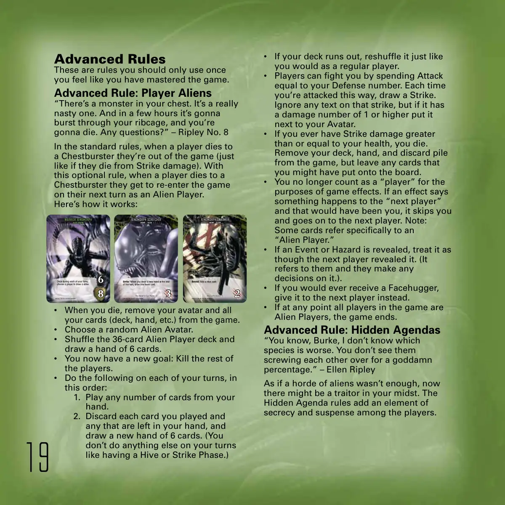
📝 第 20 页 AI 机翻对照（点击展开）
ALIEN TM & © 2014 FOX. ©2014 UDC. ENCOUNTERS.
异形战士
ALIEN化身
在你的每个回合期间，选择一名玩家摸一次打击。
ALIEN TM & © 2014 FOX. ©2014 UDC. ENCOUNTERS.
打击：当你在本回合结束时摸新手牌时，少摸一张牌。
异形尖叫者
敌人 - 异形
异形就在外面 - 2
ALIEN TM & © 2014 FOX. ©2014 UDC. ENCOUNTERS.
揭示：添加一张蜂巢卡牌。
敌人 - 异形
异形群虫
失落殖民地 - 1
进阶规则
这些规则只有在你感觉已经掌握游戏后才应该使用。
进阶规则：玩家异形
"你胸口有个怪物。是个非常恶心的那种。再过几个小时它就会冲破你的胸腔，然后你就会死。有问题吗？"——8号雷普利
在标准规则中，当玩家因胸萌者死亡时，他们会被淘汰出游戏（就像他们因打击伤害死亡一样）。通过这个可选规则，当玩家因胸萌者死亡时，他们可以在自己的下一个回合以玩家异形的身份重新进入游戏。
以下是运作方式：
• 当你死亡时，将你的化身和所有你的卡牌（牌库、手牌等）从游戏中移除。
• 随机选择一个异形化身。
• 将36张的玩家异形牌库洗牌，并摸6张手牌。
• 你现在有了新目标：杀死其他所有玩家。
• 在你的每个回合中按以下顺序执行以下操作：
1. 从你的手牌中打出任意数量的卡牌。
2. 弃掉你打出的每张卡牌和剩余的所有手牌，并摸6张新手牌。（在你的回合中你不再执行其他操作，如蜂巢阶段或打击阶段。）
• 如果你的牌库用完，像普通玩家一样重新洗牌。
• 玩家可以通过花费等同于你防御数值的攻击值来攻击你。每次你被这样攻击时，摸一张打击牌。忽略该打击牌上的任何文本，但如果它有1或更高的伤害数值，则将其放在你的化身旁边。
• 如果你任何时候的打击伤害大于或等于你的生命值，你就死亡。将你的牌库、手牌和弃牌堆从游戏中移除，但保留你可能已经放到版图上的任何卡牌。
• 你不再被计为游戏效果中的"玩家"。如果一个效果说某些事情发生在"下一个玩家"身上，而那本应是你，则跳过你并继续到下一个玩家。注意：有些卡牌特别指代"玩家异形"。
• 如果揭示事件或危险，视为下一个玩家揭示了它。（它指的是他们，他们对此做任何决定。）
• 如果你将要获得抱面虫，则将其交给下一个玩家。
• 如果在游戏中的任何时候所有玩家都是玩家异形，则游戏结束。
进阶规则：隐藏议程
"你知道吗，伯克，我不知道哪个物种更糟糕。你没看到他们为了该死的利益互相算计。"
"百分比。" – Ellen Ripley
仿佛异形群还不够，现在
你们中间可能有一个叛徒。隐藏议程规则在玩家之间增加了一种秘密和悬疑的元素。
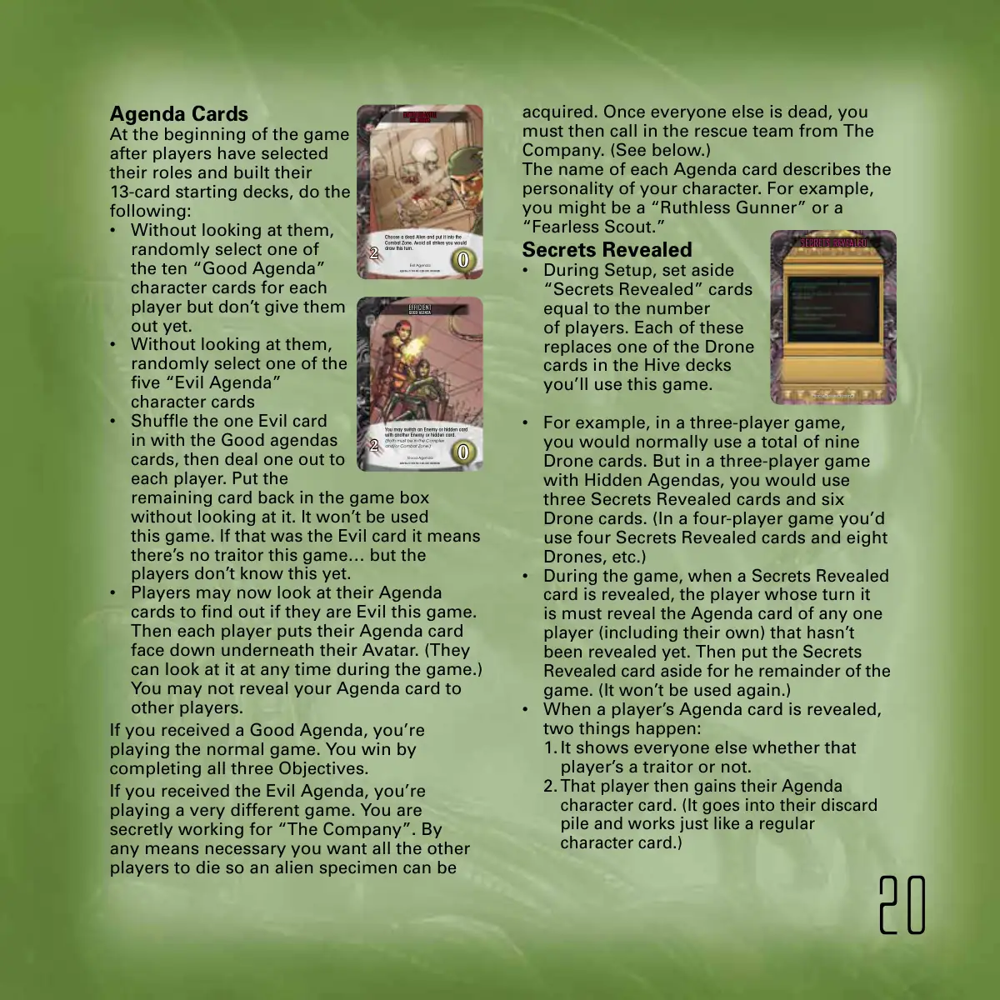
📝 第 21 页 AI 机翻对照（点击展开）
ALIEN TM & © 2014 FOX. ©2014 UDC. ENCOUNTERS.
秘密揭示
ALIEN TM & © 2014 FOX. ©2014 UDC. ENCOUNTERS.
你可以将一张敌人牌或隐藏牌与另一张敌人牌或隐藏牌交换。
（两张都必须在综合区和/或战斗区中。）
好议程
高效
好议程
ALIEN TM & © 2014 FOX. ©2014 UDC. ENCOUNTERS.
选择一张死亡的异形牌并将其放入战斗区。避免你本回合将要受到的所有打击。
恶议程
热情
恶意议程
已获得。一旦其他所有人都死亡，你必须呼叫公司的救援队。（见下文。）
每张议程卡的名称描述了你角色的个性。例如，你可能是一个"无情的枪手"或"无畏的侦察兵"。
秘密揭示
• 在设置阶段，根据玩家数量设置相应数量的"秘密揭示"卡。这些卡将替换你本局游戏中使用的蜂巢牌库中的无人机牌。
• 例如，在三玩家游戏中，你通常会使用总共九张无人机牌。但在使用隐藏议程的三玩家游戏中，你将使用三张秘密揭示卡和六张无人机牌。（在四玩家游戏中，你将使用四张秘密揭示卡和八张无人机牌，等等。）
• 游戏过程中，当一张秘密揭示卡被揭示时，轮到行动的玩家必须揭示任意一张尚未被揭示的玩家的议程卡（包括自己的）。然后将秘密揭示卡移出游戏，剩余游戏不再使用。
• 当玩家的议程卡被揭示时，会发生两件事：
1. 它向其他所有人展示该玩家是否是叛徒。
2. 该玩家随后获得其议程角色卡。（将其放入弃牌堆，其作用与普通角色卡相同。）
议程卡
在游戏开始时，玩家已选择其角色并构建了13张起始牌库后，执行以下步骤：
• 不看内容，为每位玩家随机选择十张"好议程"角色卡中的一张，但先不要分发。
• 不看内容，随机选择五张"恶意议程"角色卡中的一张。
• 将那张恶意卡与好议程卡洗在一起，然后发给每位玩家一张。将剩余的牌放回游戏盒中，不看内容。它本局游戏不会被使用。如果那是恶意卡，意味着本局游戏没有叛徒……但玩家们目前还不知道这一点。
• 玩家现在可以查看自己的议程卡，了解自己本局游戏是否是恶意方。然后每位玩家将其议程卡面朝下放在自己的头像下方。（他们可以在游戏过程中的任何时候查看它。）
你不可以向其他玩家揭示你的议程卡。
如果你获得了好议程，你正在玩正常游戏。通过完成所有三个目标获胜。
如果你收到了邪恶议程，你正在玩一个完全不同的游戏。你秘密地为"公司"工作。通过任何必要的手段，你希望所有其他玩家都死亡，以便一个外星标本可以被
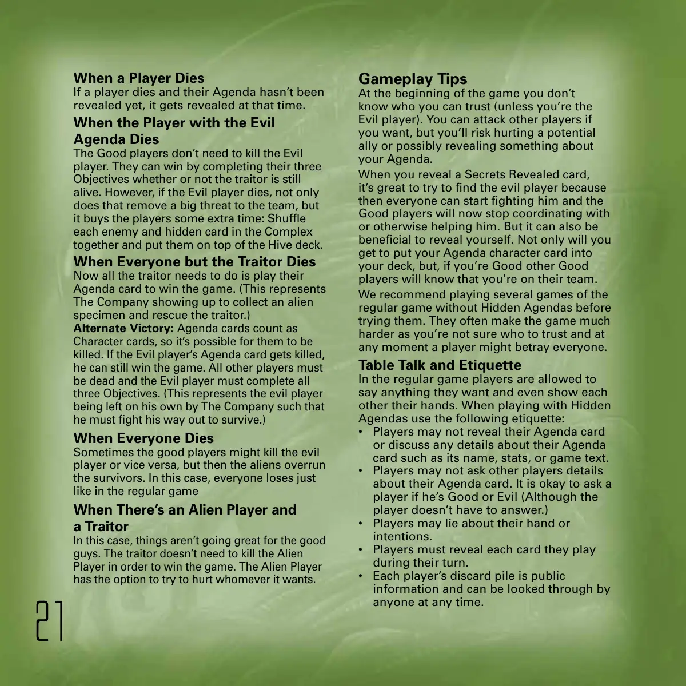
📝 第 22 页 AI 机翻对照（点击展开）
当玩家死亡
如果一个玩家死亡且其议程尚未被揭示，则会在此时被揭示。
当持有邪恶议程的玩家死亡
善良玩家不需要杀死邪恶玩家。无论叛徒是否仍然存活，他们都可以通过完成三个目标来获胜。然而，如果邪恶玩家死亡，这不仅消除了对团队的一大威胁，还为玩家们争取了一些额外时间：将复杂区域中的每个敌人和隐藏卡牌洗在一起，并将其放在牌库的顶部。
当除了叛徒之外的所有人死亡
现在，叛徒需要做的就是打出其议程卡来赢得游戏。（这代表公司前来收集外星标本并营救叛徒。）
alternate 胜利：议程卡算作角色卡，因此它们有可能被杀死。如果邪恶玩家的议程卡被杀死，他仍然可以赢得游戏。所有其他玩家必须死亡，且邪恶玩家必须完成所有三个目标。（这代表邪恶玩家被公司遗弃，必须杀出一条血路才能生存。）
当所有人都死亡
有时善良玩家可能会杀死邪恶玩家，或者反之亦然，但随后外星人会淹没幸存者。在这种情况下，所有人都像在常规游戏中一样失败。
当有外星玩家和叛徒时
在这种情况下，事情对善良玩家来说不太顺利。叛徒不需要杀死外星玩家就能赢得游戏。外星玩家可以选择尝试伤害它想伤害的任何人。
游戏技巧
在游戏开始时，你不知道可以信任谁（除非你是邪恶玩家）。你可以攻击其他玩家，但你会冒着伤害潜在盟友或可能暴露自己议程的风险。
当你打出"揭示秘密"卡牌时，最好尝试找出邪恶玩家，这样每个人都可以开始攻击他，而善良玩家将停止与他合作或以其他方式帮助他。但揭示自己也可能是有益的。你不仅可以将你的议程角色卡放入你的牌库中，而且如果你是善良玩家，其他善良玩家会知道你在他们这边。
我们建议在尝试使用隐藏议程之前，先玩几局没有隐藏议程的常规游戏。它们通常会使游戏变得更难，因为你不确定该信任谁，而且随时可能有玩家背叛所有人。
桌边交谈与礼仪
在常规游戏中，玩家可以说任何他们想说的话，甚至可以互相展示手牌。在使用隐藏议程时，请遵循以下礼仪：
• 玩家不得揭示其议程卡或讨论其议程卡的任何细节，如其名称、属性或游戏文本。
• 玩家不得询问其他玩家关于其议程卡的细节
• 玩家可以询问其他玩家其议程卡是善良阵营还是邪恶阵营（尽管玩家不必回答。）
• 玩家可以谎报自己的手牌或意图。
• 玩家必须在自己回合中打出每张牌时将其公开。
• 每个玩家的弃牌堆是公开信息，任何人都可以随时查看。
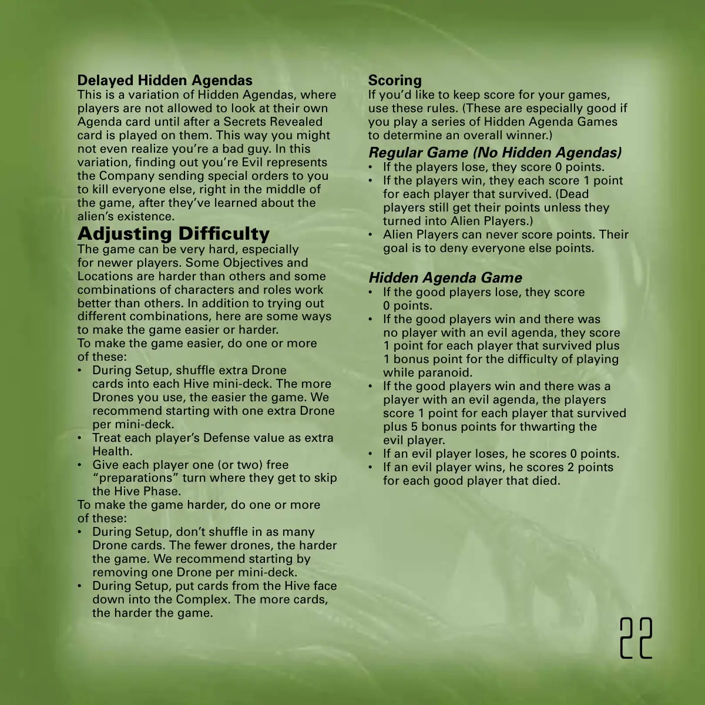
📝 第 23 页 AI 机翻对照（点击展开）
计分
如果你想为游戏计分，请使用以下规则。（如果你进行一系列《Hidden Agenda Games》以确定最终获胜者，这些规则尤其适用。）
常规游戏（无隐藏议程）
• 如果玩家失败，他们得0分。
• 如果玩家获胜，每个幸存的玩家各得1分。（除非玩家变成了外星玩家，否则死亡玩家仍可获得他们的分数。）
• 外星玩家永远不能得分。他们的目标是阻止其他人得分。
隐藏议程游戏
• 如果善良玩家失败，他们得0分。
• 如果善良玩家获胜且没有玩家持有邪恶议程，每个幸存的玩家得1分，再加上因在偏执状态下游戏而获得的1分奖励分。
• 如果善良玩家获胜且有玩家持有邪恶议程，玩家每个幸存的玩家得1分，再加上挫败邪恶玩家的5分奖励分。
• 如果邪恶玩家失败，他得0分。
• 如果邪恶玩家获胜，每个死亡的善良玩家他得2分。
延迟隐藏议程
这是隐藏议程的一种变体，玩家直到有"秘密揭示"卡牌在他们身上使用后才能查看自己的议程卡。这样你甚至可能不会意识到自己是个坏人。在这种变体中，发现自己邪恶代表着公司在了解到外星存在后，在游戏中途给你发送特殊命令，让你杀死其他所有人。
调整难度
游戏可能非常困难，尤其是对新玩家而言。某些目标和地点比其他更难，某些角色和角色的组合比其他更有效。除了尝试不同的组合外，以下是一些使游戏更容易或更困难的方法。
要使游戏更容易，执行以下一项或多项：
• 在设置期间，将额外的"无人机"牌洗入每个蜂巢迷你牌库中。你使用的无人机越多，游戏就越容易。我们建议每个迷你牌库从额外一张无人机开始。
• 将每个玩家的防御值视为额外生命值。
• 给每个玩家一个（或两个）免费的"准备"回合，让他们可以跳过蜂巢阶段。
要使游戏更困难，执行以下一项或多项：
• 在设置期间，不要洗入太多无人机牌。无人机越少，游戏越困难。我们建议每个迷你牌库减少一张无人机开始。
• 在设置期间，将蜂巢的牌面朝下放入综合体中。牌越多，游戏越困难。
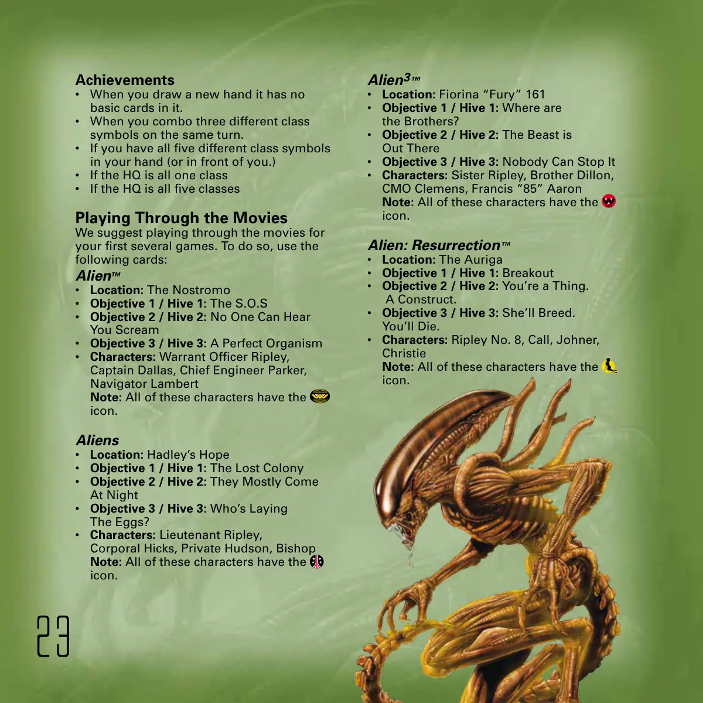
📝 第 24 页 AI 机翻对照（点击展开）
成就
• 当你摸新手牌时，其中不包含基础卡牌。
• 当你在同一回合组合三种不同的职业符号时。
• 如果你的手牌中拥有全部五种不同的职业符号（或在你面前的区域中）。
• 如果总部（HQ）全部为同一职业。
• 如果总部（HQ）包含全部五种职业。
按电影顺序游玩
我们建议在前几局游戏中按电影顺序进行游戏。为此，请使用以下卡牌：
《异形™》
• 地点：诺史莫号（The Nostromo）
• 目标1/蜂巢1：求救信号（The S.O.S）
• 目标2/蜂巢2：无人能听见你的尖叫（No One Can Hear You Scream）
• 目标3/蜂巢3：完美的生物（A Perfect Organism）
• 角色：准尉雷普利（Warrant Officer Ripley）、船长达拉斯（Captain Dallas）、总工程师帕克（Chief Engineer Parker）、导航员兰伯特（Navigator Lambert）
注意：所有这些角色都具有图标。
《异形2》
• 地点：哈德利希望（Hadley's Hope）
• 目标1/蜂巢1：失落的殖民地（The Lost Colony）
• 目标2/蜂巢2：它们主要在夜间出现（They Mostly Come At Night）
• 目标3/蜂巢3：谁在产卵？（Who's Laying The Eggs?）
• 角色：雷普利中尉（Lieutenant Ripley）、希克斯下士（Corporal Hicks）、哈德森二等兵（Private Hudson）、毕晓普（Bishop）
注意：所有这些角色都具有图标。
《异形3™》
• 地点：菲奥丽娜"怒火"161号监狱（Fiorina "Fury" 161）
• 目标1/蜂巢1：兄弟们在哪？（Where are the Brothers?）
• 目标2/蜂巢2：野兽就在外面（The Beast is Out There）
• 目标3/蜂巢3：无人能阻止它（Nobody Can Stop It）
• 角色：修女雷普利（Sister Ripley）、兄弟迪伦（Brother Dillon）、首席医疗官克莱门斯（CMO Clemens）、弗朗西斯"85"艾伦（Francis "85" Aaron）
注意：所有这些角色都具有图标。
《异形：复活™》
• 地点：奥瑞加号（The Auriga）
• 目标1/蜂巢1：越狱（Breakout）
• 目标2/蜂巢2：你是个东西。一个人造物。（You're a Thing. A Construct.）
• 目标3/蜂巢3：她会繁殖。你会死。（She'll Breed. You'll Die.）
• 角色：8号雷普利（Ripley No. 8）、卡尔（Call）、乔纳（Johner）、克里斯蒂（Christie）
注意：所有这些角色都具有图标。
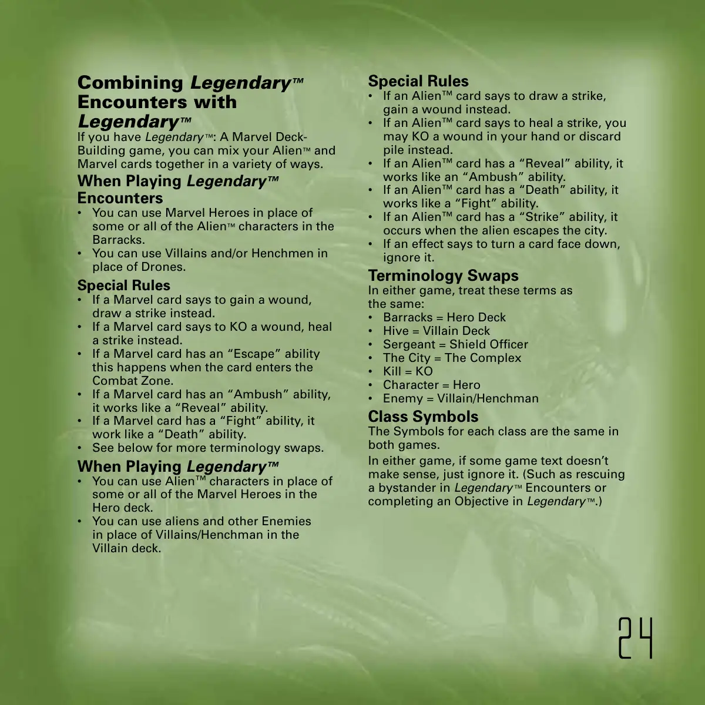
📝 第 25 页 AI 机翻对照（点击展开）
特殊规则
• 如果外星™卡牌指示你摸一张打击牌，改为获得一道伤口。
• 如果外星™卡牌指示你治疗一道打击，你可以选择将手牌或弃牌堆中的一道伤口淘汰(KO)。
• 如果外星™卡牌有"揭示"能力，它的工作方式与"伏击"能力相同。
• 如果外星™卡牌有"死亡"能力，它的工作方式与"战斗"能力相同。
• 如果外星™卡牌有"打击"能力，它在外星人逃离城市时触发。
• 如果某个效果指示将一张卡牌面朝下放置，忽略该效果。
术语替换
在任何游戏中，将以下术语视为相同：
• 营房 = 英雄牌库
• 蜂巢 = 反派牌库
• 军士 = 盾牌军官
• 城市 = 综合体
• 击杀 = 淘汰(KO)
• 角色 = 英雄
• 敌人 = 反派/爪牙
职业符号
每个职业的符号在两个游戏中是相同的。
在任何游戏中，如果某些游戏文本没有意义，直接忽略它。（例如在传奇™遭遇中营救旁观者，或在传奇™中完成目标。）
将传奇™遭遇与传奇™组合
如果你拥有传奇™：漫威牌库构筑游戏，你可以用多种方式将外星™和漫威卡牌混合在一起。
游玩传奇™遭遇时
• 你可以使用漫威英雄替代部分或全部营房中的外星™角色。
• 你可以使用反派和/或爪牙替代无人机。
特殊规则
• 如果漫威卡牌指示你获得一道伤口，改为摸一张打击牌。
• 如果漫威卡牌指示你淘汰一道伤口，改为治疗一道打击。
• 如果漫威卡牌有"逃脱"能力，当该卡牌进入战斗区时触发。
• 如果漫威卡牌有"伏击"能力，它的工作方式与"揭示"能力相同。
• 如果漫威卡牌有"战斗"能力，它的工作方式与"死亡"能力相同。
• 更多术语替换见下文。
游玩传奇™时
• 你可以使用外星™角色替代英雄牌库中的部分或全部漫威英雄。
• 你可以使用外星人和其他敌人替代反派牌库中的反派/爪牙。
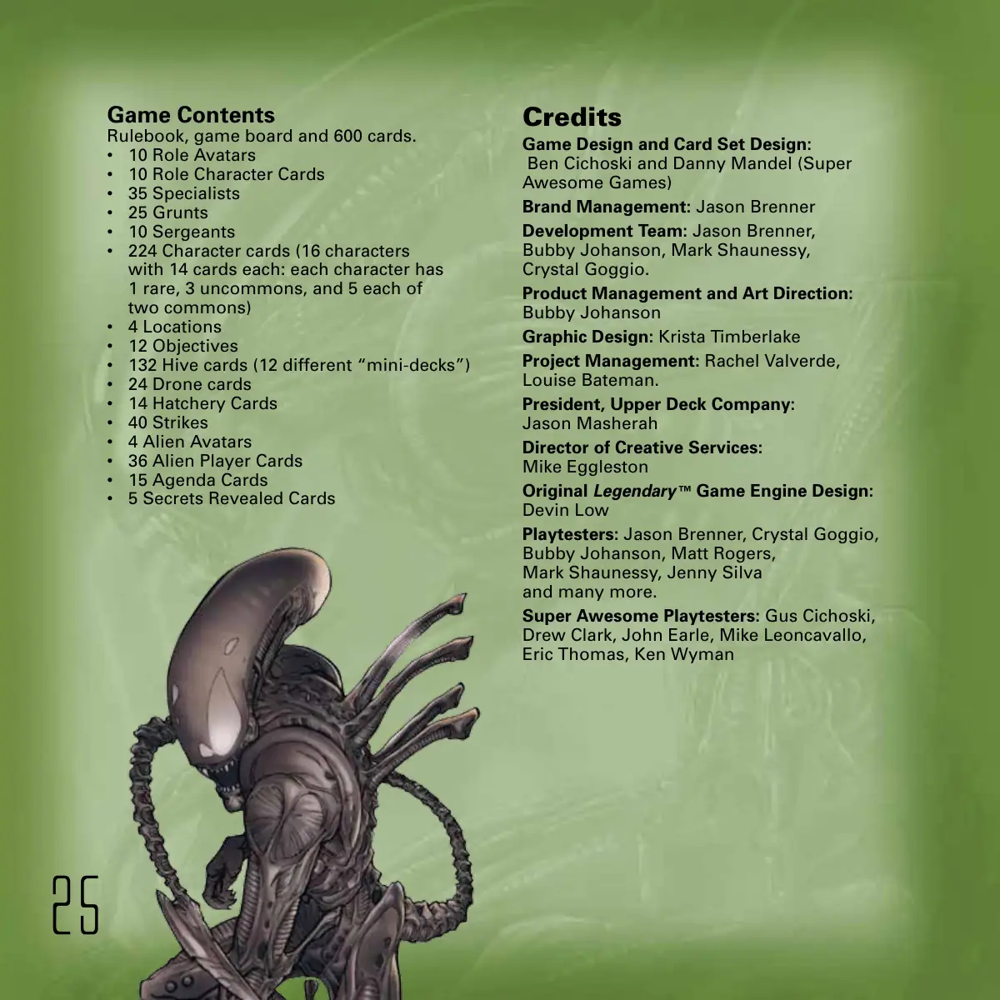
📝 第 26 页 AI 机翻对照（点击展开）
游戏内容
规则书、游戏版图和600张卡牌。
• 10个角色头像
• 10个角色角色卡
• 35个专家
• 25个普通兵
• 10个军士
• 224张角色卡牌（16个角色，每人14张卡牌：每个角色有1张稀有卡，3张非稀有卡，以及两种普通卡各5张）
• 4个地点
• 12个目标
• 132张蜂巢卡牌（12种不同的"小牌库"）
• 24张无人机卡牌
• 14个孵化器卡牌
• 40次打击
• 4个外星人头像
• 36张外星人玩家卡牌
• 15张议程卡牌
• 5张已揭示的秘密卡牌
制作人员
游戏设计与卡牌组设计：
Ben Cichoski 和 Danny Mandel (Super Awesome Games)
品牌管理：Jason Brenner
开发团队：Jason Brenner, Bubby Johanson, Mark Shaunessy, Crystal Goggio.
产品管理与艺术指导：
Bubby Johanson
平面设计：Krista Timberlake
项目管理：Rachel Valverde, Louise Bateman.
Upper Deck Company 总裁：
Jason Masherah
创意服务总监：
Mike Eggleston
原始 Legendary™ 游戏引擎设计：
Devin Low
测试玩家：Jason Brenner, Crystal Goggio, Bubby Johanson, Matt Rogers, Mark Shaunessy, Jenny Silva
以及更多。
超级 awesome 测试玩家：Gus Cichoski, Drew Clark, John Earle, Mike Leoncavallo, Eric Thomas, Ken Wyman
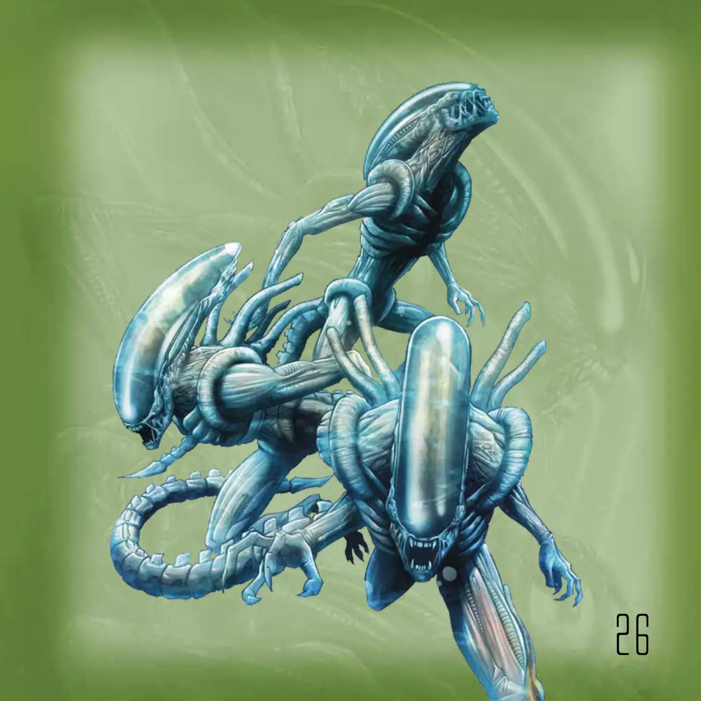
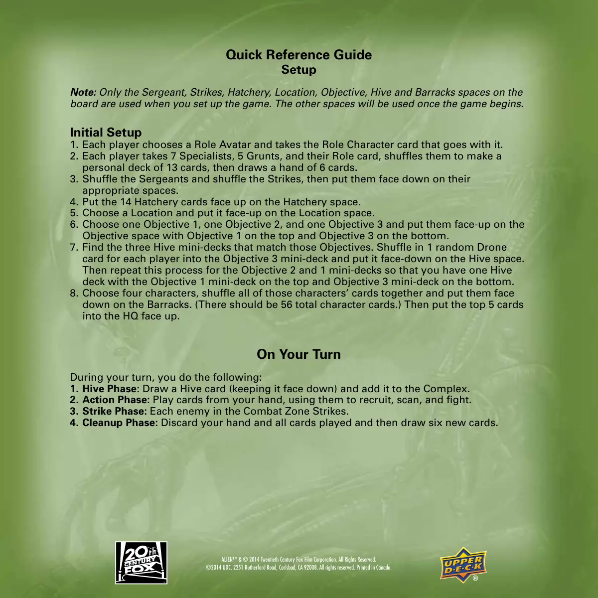
📝 第 28 页 AI 机翻对照（点击展开）
ALIEN™ & © 2014 Twentieth Century Fox Film Corporation. All Rights Reserved.
©2014 UDC. 2251 Rutherford Road, Carlsbad, CA 92008. All rights reserved. Printed in Canada.
快速参考指南
设置
注意：设置游戏时，只使用版图上的军士、打击、孵化场、地点、目标、蜂巢和军营格。其他格将在游戏开始后使用。
初始设置
- 每位玩家选择一个角色头像，并拿取对应的角色角色卡牌。
- 每位玩家拿取7张专家牌、5名杂兵和他们的角色牌，将它们洗混组成一个13张的个人牌库，然后抽取6张手牌。
- 洗混军士牌和打击牌，然后将它们面朝下放在相应的格上。
- 将14张孵化场牌面朝上放在孵化场格上。
- 选择一个地点，将它面朝上放在地点格上。
- 选择一张目标1、一张目标2和一张目标3，将它们面朝上放在目标格上，目标1在最上面，目标3在最下面。
- 找到与那些目标对应的三张蜂巢小牌库。为每位玩家随机抽取1张无人机牌混入目标3小牌库中，然后将它面朝下放在蜂巢格上。然后对目标2和目标1小牌库重复此过程，这样你就有一个蜂巢牌库，目标1小牌库在最上面，目标3小牌库在最下面。
- 选择四个角色，将所有这些角色的卡牌洗混在一起，然后面朝下放在军营。（总共应该有56张角色卡牌。）然后将顶部的5张牌面朝上放入总部。
在你的回合
在你的回合期间，你执行以下操作：
- 蜂巢阶段：摸一张蜂巢牌（保持面朝下）并将其加入综合体。
- 行动阶段：从你的手牌中打出卡牌，使用它们来招募、扫描和战斗。
- 打击阶段：每个在战斗区的敌人进行打击。
- 清理阶段：弃掉你的手牌和所有已打出的卡牌，然后摸六张新牌。